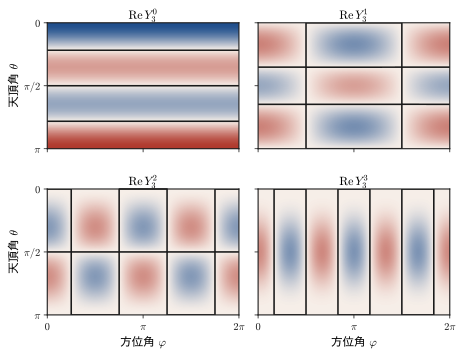
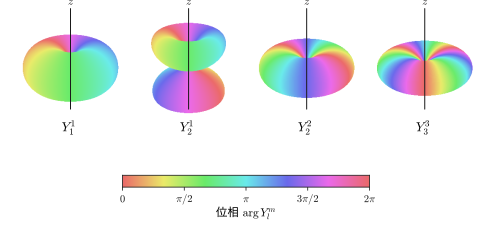
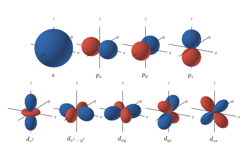
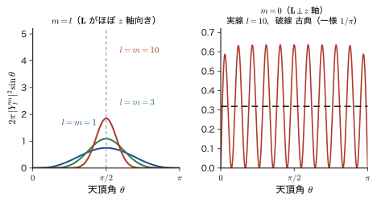
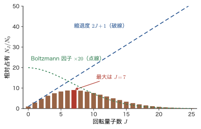
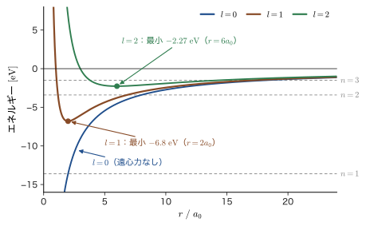

第22章球面調和関数と角運動量の量子化
前章では，古典力学の角運動量 $\bm{L}=\bm{r}\times\bm{p}$ を演算子 $\hat{\bm{L}}$ に置き換え，その 3 つの成分が互いに交換しないこと（$[\hat{L}_x,\hat{L}_y]=i\hbar\hat{L}_z$ など）を学んだ．成分どうしが同時に確定できないのだから，「角運動量を 1 本の矢印として指定する」ことは，量子力学ではもうできない．では，角運動量について確かに言えることは何だろうか．この章の答えは，大きさと，ある 1 つの方向の成分である．
その答えを出す道具が，角運動量の大きさの 2 乗の演算子 $\hat{\bm{L}}^2=\hat{L}_x^2+\hat{L}_y^2+\hat{L}_z^2$ である．これを球座標 $(r,\theta,\varphi)$ で書くと，$\hat{L}_x^2$ と $\hat{L}_y^2$ に現れる項の大半が相殺して，$-\hbar^2\bigl\{\frac{1}{\sin\theta}\partial_\theta(\sin\theta\,\partial_\theta)+\frac{1}{\sin^2\theta}\partial_\varphi^2\bigr\}$ という驚くほど簡単な形になる．これは前章の「球面上の粒子」や，第III部の水素原子の角度部分にすでに現れた方程式そのものであり，固有関数が球面調和関数 $Y_l^m(\theta,\varphi)$，固有値が $l(l+1)\hbar^2$ である．したがって角運動量の大きさは $\sqrt{l(l+1)}\,\hbar$ となる．Bohr 模型の $l\hbar$ ではなく，$\hbar$ の整数倍のようでいて整数倍でない，不思議な値である．さらに，$\hat{\bm{L}}^2$ が 3 つの成分のすべてと交換することを示し，「大きさと 1 つの成分は同時に確定できるが，残りの 2 つの成分は（$l\ge1$ の状態では）確定できない」という結論に至る．
古典力学（AD 03「大学基礎物理学」第8章 8.1）では，中心力のもとで角運動量は保存し，大きさも向きも連続的な値をとることができた．量子力学では，大きさも $z$ 成分もとびとびで，しかも 3 成分は同時には確定しない．この量子化は，回転する車輪や惑星のような巨視的な物体では $\hbar$ が小さすぎて見えないが（例題22.4），分子の回転（CO 分子が約 115 GHz のマイクロ波を吸収すること，22.6 節）や，s，p，d，f という原子軌道の区別（22.7 節）としてはっきり現れる．材料科学では，d 軌道・f 軌道の形と角運動量が，遷移金属酸化物の色と磁性，希土類の発光，結晶場の中での軌道角運動量の凍結（22.3 節）を決める．本章は，これらすべての土台になる．
- $\hat{L}_x^2$，$\hat{L}_y^2$ の展開を行を飛ばさずに計算し，1 階微分の項が相殺すること，そして $\hat{\bm{L}}^2=-\hbar^2\bigl\{\frac{1}{\sin\theta}\partial_\theta(\sin\theta\,\partial_\theta)+\frac{1}{\sin^2\theta}\partial_\varphi^2\bigr\}$ を導くこと．$\nabla^2$ との関係 $\nabla^2=\partial_r^2+\frac2r\partial_r-\frac{\hat{\bm{L}}^2}{\hbar^2r^2}$ と遠心力ポテンシャル
- 球面調和関数 $Y_l^m$（Condon–Shortley の位相）の定義と $l=0,\dots,3$ の表，性質（規格直交性，パリティ，節）．$\hat{\bm{L}}^2Y_l^m=l(l+1)\hbar^2Y_l^m$，$\hat{L}_zY_l^m=m\hbar Y_l^m$，角運動量の大きさ $L=\sqrt{l(l+1)}\,\hbar$
- 複素の $Y_l^m$ と実数の軌道（$p_x$，$d_{xy}$，……）の変換，$\hat{L}_z$ の測定値と確率，実の波動関数では $\expval{\hat{\bm{L}}}=0$（軌道角運動量の凍結）
- 交換子の恒等式 $[\hat{A}\hat{B},\hat{C}]=\hat{A}[\hat{B},\hat{C}]+[\hat{A},\hat{C}]\hat{B}$ を使って $[\hat{\bm{L}}^2,\hat{L}_z]=[\hat{\bm{L}}^2,\hat{L}_x]=[\hat{\bm{L}}^2,\hat{L}_y]=0$ を示し，大きさと 1 成分だけが同時に確定できることを説明する．中心力では $[\hat{H},\hat{\bm{L}}]=0$ で角運動量が保存すること
- ベクトル模型（$\cos\theta_m=m/\sqrt{l(l+1)}$）を描き，$\expval{\hat{L}_x^2+\hat{L}_y^2}=[l(l+1)-m^2]\hbar^2$ から「なぜ $L_z$ の最大値 $l\hbar$ が $L$ より小さいのか」を説明し，ベクトル模型が比喩にすぎない理由と古典極限を述べる
- 剛体回転子 $E_J=\hbar^2J(J+1)/(2I)$ と回転スペクトル（選択則 $\Delta J=\pm1$，線の間隔 $2B$）．CO 分子で $B=1.931\ \mathrm{cm^{-1}}$，$115.8\ \mathrm{GHz}$，300 K で最も占有される $J=7$
- 中心力の Schrödinger 方程式の角度部分が $Y_l^m$ で共通であること，縮退度 $2l+1$ がポテンシャルの形によらないこと，有効ポテンシャル $V_{\mathrm{eff}}=V+\hbar^2l(l+1)/(2mr^2)$，分光記号 s，p，d，f
もとにしたノート：望月泰英『物理学ノート 量子力学2』 pp. 30–31．
22.1 $\hat{\bm{L}}^2$ の極座標表示 — 展開・相殺・恒等式
22.1.1 なぜ $\hat{\bm{L}}^2$ を考えるのか
古典力学では，角運動量ベクトル $\bm{L}=\bm{r}\times\bm{p}$ の大きさの 2 乗は，成分の 2 乗の和 $L^2=L_x^2+L_y^2+L_z^2$ である．量子力学では 3 つの成分が同時に確定できない（前章）ので，「向きは諦めて，大きさだけを問う」ことにして，2 乗の和の演算子を作ろう．
定義22.1 角運動量の大きさの 2 乗の演算子
\begin{equation} \hat{\bm{L}}^2\equiv\hat{L}_x^2+\hat{L}_y^2+\hat{L}_z^2 \label{eq:22-L2def} \end{equation}ここで $\hat{L}_x^2=\hat{L}_x\hat{L}_x$ は，演算子 $\hat{L}_x$ を 2 回続けて作用させることを表す．$\hat{\bm{L}}^2$ は，ベクトル演算子 $\hat{\bm{L}}$ どうしの内積 $\hat{\bm{L}}\cdot\hat{\bm{L}}$ である．
$\hat{L}_x,\hat{L}_y,\hat{L}_z$ はどれもエルミート演算子なので，$\hat{L}_x^2$ などの固有値は 0 以上になり，$\hat{\bm{L}}^2$ の固有値も 0 以上である（これが「大きさの 2 乗」と呼べる理由の 1 つである）．次節以降で，$\hat{\bm{L}}^2$ が 3 つの成分のすべてと交換すること（22.4 節）を示す．したがって「$\hat{\bm{L}}^2$ の値」と「$\hat{L}_z$ の値」は同時に確定できる．
ここでは最初に，$\hat{\bm{L}}^2$ を極座標で書き表す．理由は 3 つある．(1) 原子や分子の波動関数は，角度 $(\theta,\varphi)$ の関数として扱うのが自然である．(2) 前章で見たとおり，$\hat{L}_x,\hat{L}_y,\hat{L}_z$ の球座標での形には，動径 $r$ が現れず，角度 $(\theta,\varphi)$ による微分だけが現れる．つまり角運動量は球面の上の回転を記述する演算子である（図22.1）．(3) 3 つの成分の 2 乗を足すと，複雑な項の大半が打ち消し合って，驚くほど簡単で対称な形になる．前章で $\hat{\bm{p}}=-i\hbar\nabla$（$\hbar/i=-i\hbar$）から求めた結果は，
\begin{equation} \begin{aligned} \hat{L}_x&=i\hbar\left(\sin\varphi\,\frac{\partial}{\partial\theta}+\frac{\cos\varphi}{\tan\theta}\frac{\partial}{\partial\varphi}\right),\\ \hat{L}_y&=i\hbar\left(-\cos\varphi\,\frac{\partial}{\partial\theta}+\frac{\sin\varphi}{\tan\theta}\frac{\partial}{\partial\varphi}\right),\\ \hat{L}_z&=-i\hbar\,\frac{\partial}{\partial\varphi} \end{aligned} \label{eq:22-Lpolar} \end{equation}である（前章では $-\hbar/i=i\hbar$ と書いた）．以下では，$\partial_\theta=\partial/\partial\theta$，$\partial_\varphi=\partial/\partial\varphi$ と略記し，$\dfrac{1}{\tan\theta}=\cot\theta$ と書く．
注意：微分演算子の 2 乗は「係数も微分される」
$\hat{L}_x^2$ は，関数 $f(\theta,\varphi)$ に $\hat{L}_x$ を 2 回続けて作用させたもの $\hat{L}_x(\hat{L}_xf)$ である．1 回目の作用の結果には $\sin\varphi$ や $\cot\theta$ などの係数が掛かっているので，2 回目の微分では，$f$ だけでなくこれらの係数も微分される（積の微分）．たとえば $\partial_\theta(\cot\theta\,g)=-\dfrac{1}{\sin^2\theta}g+\cot\theta\,\partial_\theta g$（$\dfrac{\dd}{\dd\theta}\cot\theta=-\dfrac{1}{\sin^2\theta}$）．「$(\sin\varphi\,\partial_\theta+\cdots)^2$ を普通の 2 乗のように展開する」のではなく，演算子の順序を守って，関数に作用させながら展開する．
22.1.2 $\hat{L}_x^2$ の展開
式 \eqref{eq:22-Lpolar} の $\hat{L}_x=i\hbar D_x$（$D_x\equiv\sin\varphi\,\partial_\theta+\cot\theta\cos\varphi\,\partial_\varphi$）から，$\hat{L}_x^2=(i\hbar)^2D_x^2=-\hbar^2D_x^2$，すなわち
$$ -\frac{\hat{L}_x^2}{\hbar^2}=D_x^2=\left(\sin\varphi\,\partial_\theta+\cot\theta\cos\varphi\,\partial_\varphi\right)^2 $$である．任意の関数 $f(\theta,\varphi)$ に作用させて，4 つの積に分けて計算する．
導出：$D_x^2f$ の展開
$D_x^2f=D_x\bigl(\sin\varphi\,\partial_\theta f+\cot\theta\cos\varphi\,\partial_\varphi f\bigr)$ の 4 つの部分を順に求める．
(a) $\sin\varphi\,\partial_\theta\bigl(\sin\varphi\,\partial_\theta f\bigr)=\sin^2\varphi\,\partial_\theta^2f$（$\sin\varphi$ は $\theta$ によらない定数扱い）．
(b) $\partial_\theta$ が $\cot\theta$ にも作用することに注意して（$\partial_\theta\cot\theta=-\dfrac{1}{\sin^2\theta}$），
$$ \begin{aligned} \sin\varphi\,\partial_\theta\bigl(\cot\theta\cos\varphi\,\partial_\varphi f\bigr)&=\sin\varphi\cos\varphi\bigl\{(\partial_\theta\cot\theta)\,\partial_\varphi f+\cot\theta\,\partial_\theta\partial_\varphi f\bigr\}\\ &=-\frac{\sin\varphi\cos\varphi}{\sin^2\theta}\,\partial_\varphi f+\sin\varphi\cos\varphi\cot\theta\,\partial_\theta\partial_\varphi f. \end{aligned} $$(c) $\partial_\varphi\sin\varphi=\cos\varphi$ より，
$$ \begin{aligned} \cot\theta\cos\varphi\,\partial_\varphi\bigl(\sin\varphi\,\partial_\theta f\bigr)&=\cot\theta\cos\varphi\bigl\{\cos\varphi\,\partial_\theta f+\sin\varphi\,\partial_\varphi\partial_\theta f\bigr\}\\ &=\cos^2\varphi\cot\theta\,\partial_\theta f+\sin\varphi\cos\varphi\cot\theta\,\partial_\varphi\partial_\theta f. \end{aligned} $$(d) $\partial_\varphi\cos\varphi=-\sin\varphi$ より，
$$ \begin{aligned} \cot\theta\cos\varphi\,\partial_\varphi\bigl(\cot\theta\cos\varphi\,\partial_\varphi f\bigr)&=\cot^2\theta\cos\varphi\bigl\{-\sin\varphi\,\partial_\varphi f+\cos\varphi\,\partial_\varphi^2f\bigr\}\\ &=-\sin\varphi\cos\varphi\cot^2\theta\,\partial_\varphi f+\cos^2\varphi\cot^2\theta\,\partial_\varphi^2f. \end{aligned} $$(a)〜(d) を足し，$f$ の滑らかさから $\partial_\theta\partial_\varphi f=\partial_\varphi\partial_\theta f$（微分の順序は交換できる）を使うと，項の並べ方を次のようにすることができる：
\begin{equation} \begin{aligned} -\frac{\hat{L}_x^2}{\hbar^2}={}&\Bigl(\sin^2\varphi\,\partial_\theta^2-\frac{\sin\varphi\cos\varphi}{\sin^2\theta}\,\partial_\varphi+\sin\varphi\cos\varphi\cot\theta\,\partial_\theta\partial_\varphi\Bigr)\\ &+\bigl(\cos^2\varphi\cot\theta\,\partial_\theta+\sin\varphi\cos\varphi\cot\theta\,\partial_\theta\partial_\varphi\\ &\qquad-\sin\varphi\cos\varphi\cot^2\theta\,\partial_\varphi+\cos^2\varphi\cot^2\theta\,\partial_\varphi^2\bigr) \end{aligned} \label{eq:22-Lx2} \end{equation}1 行目は (a)＋(b)（3 項），2 行目は (c)＋(d)（4 項）である．合計 7 項．
（導出終わり）
22.1.3 $\hat{L}_y^2$ の展開
$\hat{L}_y=i\hbar D_y$（$D_y\equiv-\cos\varphi\,\partial_\theta+\cot\theta\sin\varphi\,\partial_\varphi$）から，同様に $-\hat{L}_y^2/\hbar^2=D_y^2$ である．$\hat{L}_x$ の $\sin\varphi$ が $-\cos\varphi$ に，$\cos\varphi$ が $\sin\varphi$ に替わっただけなので，計算は (a)〜(d) と平行に進む．
導出：$D_y^2f$ の展開
(a′) $-\cos\varphi\,\partial_\theta\bigl(-\cos\varphi\,\partial_\theta f\bigr)=\cos^2\varphi\,\partial_\theta^2f$．
(b′)
$$ \begin{aligned} -\cos\varphi\,\partial_\theta\bigl(\cot\theta\sin\varphi\,\partial_\varphi f\bigr)&=-\sin\varphi\cos\varphi\bigl\{(\partial_\theta\cot\theta)\,\partial_\varphi f+\cot\theta\,\partial_\theta\partial_\varphi f\bigr\}\\ &=\frac{\sin\varphi\cos\varphi}{\sin^2\theta}\,\partial_\varphi f-\sin\varphi\cos\varphi\cot\theta\,\partial_\theta\partial_\varphi f. \end{aligned} $$(c′) $\partial_\varphi(-\cos\varphi)=\sin\varphi$ より，
$$ \begin{aligned} \cot\theta\sin\varphi\,\partial_\varphi\bigl(-\cos\varphi\,\partial_\theta f\bigr)&=\cot\theta\sin\varphi\bigl\{\sin\varphi\,\partial_\theta f-\cos\varphi\,\partial_\varphi\partial_\theta f\bigr\}\\ &=\sin^2\varphi\cot\theta\,\partial_\theta f-\sin\varphi\cos\varphi\cot\theta\,\partial_\theta\partial_\varphi f. \end{aligned} $$(d′)
$$ \begin{aligned} \cot\theta\sin\varphi\,\partial_\varphi\bigl(\cot\theta\sin\varphi\,\partial_\varphi f\bigr)&=\cot^2\theta\sin\varphi\bigl\{\cos\varphi\,\partial_\varphi f+\sin\varphi\,\partial_\varphi^2f\bigr\}\\ &=\sin\varphi\cos\varphi\cot^2\theta\,\partial_\varphi f+\sin^2\varphi\cot^2\theta\,\partial_\varphi^2f. \end{aligned} $$足し合わせて，
\begin{equation} \begin{aligned} -\frac{\hat{L}_y^2}{\hbar^2}={}&\Bigl(\cos^2\varphi\,\partial_\theta^2+\frac{\sin\varphi\cos\varphi}{\sin^2\theta}\,\partial_\varphi-\sin\varphi\cos\varphi\cot\theta\,\partial_\theta\partial_\varphi\Bigr)\\ &+\bigl(\sin^2\varphi\cot\theta\,\partial_\theta-\sin\varphi\cos\varphi\cot\theta\,\partial_\theta\partial_\varphi\\ &\qquad+\sin\varphi\cos\varphi\cot^2\theta\,\partial_\varphi+\sin^2\varphi\cot^2\theta\,\partial_\varphi^2\bigr) \end{aligned} \label{eq:22-Ly2} \end{equation}（導出終わり）
注意：$\varphi$ の三角関数と $\theta$ の三角関数を取り違えない
式 \eqref{eq:22-Lx2}，\eqref{eq:22-Ly2} の最後の項は，それぞれ $\cos^2\varphi\cot^2\theta\,\partial_\varphi^2$，$\sin^2\varphi\cot^2\theta\,\partial_\varphi^2$ である．これは，$\partial_\varphi$ の係数が「$\cot\theta$ と $\varphi$ の三角関数の積」（$\cot\theta\cos\varphi$，$\cot\theta\sin\varphi$）であることから，それを 2 乗して出てくる．$\varphi$ の三角関数と $\theta$ の三角関数を取り違えると，次節で 2 つの式を足したときに $\varphi$ に依存する係数が残ってしまう．$\hat{L}_x^2+\hat{L}_y^2$ は $z$ 軸まわりの回転（$\varphi\to\varphi+\alpha$）で不変なはずなので，$\varphi$ の関数は残らない．これが計算のよい検算になる．
22.1.4 $\hat{L}_x^2+\hat{L}_y^2$ — 1 階微分の項の相殺
式 \eqref{eq:22-Lx2} と \eqref{eq:22-Ly2} を足す．14 個の項を，微分の種類ごとに分けて表22.1 にまとめると，相殺するものが一目でわかる．表の各行は，$-\hat{L}_x^2/\hbar^2$ に現れる項，$-\hat{L}_y^2/\hbar^2$ に現れる項，その和である（$s\equiv\sin\varphi\cos\varphi$ と略記する）．
| 微分の種類 | $-\hat{L}_x^2/\hbar^2$ の項 | $-\hat{L}_y^2/\hbar^2$ の項 | 和 |
|---|---|---|---|
| $\partial_\theta^2$ | $\sin^2\varphi$ | $\cos^2\varphi$ | $1$ |
| $\partial_\theta$ | $\cos^2\varphi\cot\theta$ | $\sin^2\varphi\cot\theta$ | $\cot\theta$ |
| $\partial_\varphi^2$ | $\cos^2\varphi\cot^2\theta$ | $\sin^2\varphi\cot^2\theta$ | $\cot^2\theta$ |
| $\partial_\varphi$（1 階） | $-\dfrac{s}{\sin^2\theta}-s\cot^2\theta$ | $+\dfrac{s}{\sin^2\theta}+s\cot^2\theta$ | $0$（相殺） |
| $\partial_\theta\partial_\varphi$ | $+s\cot\theta+s\cot\theta$ | $-s\cot\theta-s\cot\theta$ | $0$（相殺） |
$\partial_\theta^2$，$\partial_\theta$，$\partial_\varphi^2$ の項は，$\sin^2\varphi+\cos^2\varphi=1$ を使って係数から $\varphi$ が消える．$\partial_\varphi$（1 階）の項の 4 つと，$\partial_\theta\partial_\varphi$ の項の 4 つは，$\hat{L}_x^2$ と $\hat{L}_y^2$ で符号が正反対なので，すべて相殺する．こうして，
\begin{equation} -\frac{\hat{L}_x^2+\hat{L}_y^2}{\hbar^2}=\frac{1}{\tan\theta}\,\frac{\partial}{\partial\theta}+\frac{\partial^2}{\partial\theta^2}+\frac{1}{\tan^2\theta}\,\frac{\partial^2}{\partial\varphi^2} \label{eq:22-LxLy} \end{equation}が得られる．ここで最も大事なのは，右辺の係数のどこにも $\varphi$ が残っていないことである．
考察：なぜ $\varphi$ に依存する項が相殺するのか
$\hat{L}_x^2+\hat{L}_y^2=\hat{\bm{L}}^2-\hat{L}_z^2$ は，$z$ 軸のまわりに座標系を回しても形が変わらないはずの量である（$x$ 軸と $y$ 軸をどの向きに選んでも，横成分の 2 乗和 $L_x^2+L_y^2$ は同じ）．$z$ 軸のまわりの回転は $\varphi\to\varphi+\alpha$ という変換であるから，この演算子の係数は $\varphi$ に依存してはならない．$\sin\varphi\cos\varphi$ を含む項が残らないのは，その対称性の現れである．同じ理由で，$\hat{L}_x^2$ 単独，$\hat{L}_y^2$ 単独には $\varphi$ の関数が現れるが，$x$ と $y$ を同じ重みで足せば消える．この主張は 22.4 節で $[\hat{\bm{L}}^2,\hat{L}_z]=0$ として代数的に確かめる（$\hat{L}_z=-i\hbar\,\partial_\varphi$ と可換であることは，$\hat{\bm{L}}^2$ の係数が $\varphi$ によらないことと同じである）．
22.1.5 $\hat{L}_z^2$
$\hat{L}_z=-i\hbar\,\partial_\varphi$ から，$\hat{L}_z^2=(-i\hbar)^2\partial_\varphi^2=-\hbar^2\partial_\varphi^2$，すなわち
\begin{equation} -\frac{\hat{L}_z^2}{\hbar^2}=\frac{\partial^2}{\partial\varphi^2} \label{eq:22-Lz2} \end{equation}である．
22.1.6 2 つの恒等式と $\hat{\bm{L}}^2$ の最終形
$\hat{\bm{L}}^2=\hat{L}_x^2+\hat{L}_y^2+\hat{L}_z^2$ を $\hat{\bm{L}}^2=-\hbar^2\Bigl\{-\dfrac{\hat{L}_x^2+\hat{L}_y^2}{\hbar^2}-\dfrac{\hat{L}_z^2}{\hbar^2}\Bigr\}$ と書き直し，式 \eqref{eq:22-LxLy} と \eqref{eq:22-Lz2} を代入すると，
$$ \hat{\bm{L}}^2=-\hbar^2\left\{\frac{1}{\tan\theta}\frac{\partial}{\partial\theta}+\frac{\partial^2}{\partial\theta^2}+\left(1+\frac{1}{\tan^2\theta}\right)\frac{\partial^2}{\partial\varphi^2}\right\} $$となる．これを見やすい形にするために，次の 2 つの恒等式を使う．
2 つの恒等式
(i)
$$ \frac{1}{\tan\theta}\frac{\partial}{\partial\theta}+\frac{\partial^2}{\partial\theta^2}=\frac{\cos\theta}{\sin\theta}\frac{\partial}{\partial\theta}+\frac{\partial^2}{\partial\theta^2}=\frac{1}{\sin\theta}\frac{\partial}{\partial\theta}\left(\sin\theta\,\frac{\partial}{\partial\theta}\right) $$実際，右辺を関数 $f$ に作用させると，積の微分 $\partial_\theta(\sin\theta\,\partial_\theta f)=\cos\theta\,\partial_\theta f+\sin\theta\,\partial_\theta^2f$ より，
$$ \frac{1}{\sin\theta}\bigl(\cos\theta\,\partial_\theta f+\sin\theta\,\partial_\theta^2f\bigr)=\frac{\cos\theta}{\sin\theta}\partial_\theta f+\partial_\theta^2f $$となり，左辺と一致する．
(ii) $1+\dfrac{1}{\tan^2\theta}=\dfrac{\sin^2\theta+\cos^2\theta}{\sin^2\theta}=\dfrac{1}{\sin^2\theta}$（$\sin^2\theta+\cos^2\theta=1$ を使った）．
（証明終わり）
(i) を第 1，2 項に，(ii) を第 3 項に使うと，次の結果を得る．
定理22.1 $\hat{\bm{L}}^2$ の極座標表示
\begin{equation} \hat{\bm{L}}^2=-\hbar^2\left\{\frac{1}{\sin\theta}\frac{\partial}{\partial\theta}\left(\sin\theta\,\frac{\partial}{\partial\theta}\right)+\frac{1}{\sin^2\theta}\frac{\partial^2}{\partial\varphi^2}\right\} \label{eq:22-L2polar} \end{equation}$\Delta_{\mathrm{S}}$ は球面ラプラシアン（単位球面上の Laplace 演算子）と呼ばれる．式 \eqref{eq:22-L2polar} には $r$ が現れないので，$\hat{\bm{L}}^2$ は，球の半径によらず，球面の上の関数だけに作用する演算子である．次元を確かめておこう：$\hbar$ は角運動量（$\mathrm{J\,s}$）の次元をもち，角度による微分は無次元なので，$\hat{\bm{L}}^2$ の次元は $(\mathrm{J\,s})^2$，すなわち角運動量の 2 乗である．また，定数関数（$s$ 状態の角度部分）$f=1$ に作用させると $\hat{\bm{L}}^2\cdot1=0$，つまり角運動量が 0 の状態を表す．
例題22.1 $\hat{\bm{L}}^2$ を具体的な関数に作用させる
式 \eqref{eq:22-L2polar} を使って，$f_1=\cos\theta$，$f_2=\sin\theta\,e^{i\varphi}$，$f_3=3\cos^2\theta-1$ が $\hat{\bm{L}}^2$ の固有関数であることを示し，固有値を求めよ．
解答 $f_1=\cos\theta$：$\partial_\theta f_1=-\sin\theta$，$\sin\theta\,\partial_\theta f_1=-\sin^2\theta$，$\partial_\theta\bigl(-\sin^2\theta\bigr)=-2\sin\theta\cos\theta$．これを $\sin\theta$ で割って $-2\cos\theta$．$\partial_\varphi^2f_1=0$．よって $\hat{\bm{L}}^2f_1=-\hbar^2(-2\cos\theta)=2\hbar^2f_1$．固有値は $2\hbar^2$．
$f_2=\sin\theta\,e^{i\varphi}$：$\partial_\theta f_2=\cos\theta\,e^{i\varphi}$，$\sin\theta\,\partial_\theta f_2=\sin\theta\cos\theta\,e^{i\varphi}$，$\partial_\theta(\sin\theta\cos\theta)=\cos^2\theta-\sin^2\theta$ より第 1 項は $\dfrac{\cos^2\theta-\sin^2\theta}{\sin\theta}e^{i\varphi}$．第 2 項は $\partial_\varphi^2f_2=-\sin\theta\,e^{i\varphi}$ より $\dfrac{1}{\sin^2\theta}\cdot(-\sin\theta\,e^{i\varphi})=-\dfrac{e^{i\varphi}}{\sin\theta}$．波括弧の中は
$$ \frac{\cos^2\theta-\sin^2\theta-1}{\sin\theta}\,e^{i\varphi}=\frac{-2\sin^2\theta}{\sin\theta}\,e^{i\varphi}=-2\sin\theta\,e^{i\varphi}\qquad(\cos^2\theta-1=-\sin^2\theta) $$よって $\hat{\bm{L}}^2f_2=2\hbar^2f_2$．固有値は $2\hbar^2$．
$f_3=3\cos^2\theta-1$：$\partial_\theta f_3=-6\cos\theta\sin\theta$，$\sin\theta\,\partial_\theta f_3=-6\cos\theta\sin^2\theta$．もう一度 $\theta$ で微分して，
$$ \partial_\theta\bigl(-6\cos\theta\sin^2\theta\bigr)=-6\bigl(-\sin^3\theta+2\sin\theta\cos^2\theta\bigr)=6\sin^3\theta-12\sin\theta\cos^2\theta $$$\sin\theta$ で割って $6\sin^2\theta-12\cos^2\theta=6(1-\cos^2\theta)-12\cos^2\theta=6-18\cos^2\theta=-6\,(3\cos^2\theta-1)$．$\partial_\varphi^2f_3=0$．よって $\hat{\bm{L}}^2f_3=-\hbar^2\cdot(-6f_3)=6\hbar^2f_3$．固有値は $6\hbar^2$．
3 つの固有値 $2\hbar^2,\ 2\hbar^2,\ 6\hbar^2$ は，$l(l+1)\hbar^2$ で $l=1,1,2$ とおいたものである．$f_1\propto Y_1^0$，$f_2\propto Y_1^1$，$f_3\propto Y_2^0$ にあたる（22.2 節）．
22.1.7 $\nabla^2$ との関係 — 遠心力ポテンシャル
球座標のラプラシアン（AD 02 第44章 44.4．第14章 14.2でも使った）は，
$$ \begin{aligned} \nabla^2=\frac{1}{r^2}\frac{\partial}{\partial r}\left(r^2\frac{\partial}{\partial r}\right)&+\frac{1}{r^2}\left\{\frac{1}{\sin\theta}\frac{\partial}{\partial\theta}\left(\sin\theta\,\frac{\partial}{\partial\theta}\right)\right.\\ &\qquad\left.+\frac{1}{\sin^2\theta}\frac{\partial^2}{\partial\varphi^2}\right\} \end{aligned} $$である．最後の波括弧は球面ラプラシアン $\Delta_{\mathrm{S}}$ そのものだから，定理22.1 の $\Delta_{\mathrm{S}}=-\hat{\bm{L}}^2/\hbar^2$ を使って，次の関係が得られる．
定理22.2 $\nabla^2$ の動径部分と角度部分
\begin{equation} \nabla^2=\frac{\partial^2}{\partial r^2}+\frac{2}{r}\frac{\partial}{\partial r}-\frac{\hat{\bm{L}}^2}{\hbar^2r^2} \label{eq:22-lap} \end{equation}ここで $\dfrac{1}{r^2}\partial_r\bigl(r^2\partial_r\bigr)=\partial_r^2+\dfrac{2}{r}\partial_r$ を使った．
粒子の質量を $m$ と書く（磁気量子数 $m$ とは別のものである）．運動エネルギーの演算子は $\hat{T}=-\dfrac{\hbar^2}{2m}\nabla^2$ なので，
\begin{equation} \hat{T}=-\frac{\hbar^2}{2m}\left(\frac{\partial^2}{\partial r^2}+\frac{2}{r}\frac{\partial}{\partial r}\right)+\frac{\hat{\bm{L}}^2}{2mr^2} \label{eq:22-T} \end{equation}と書ける．第 1 項は動径方向の運動の運動エネルギー，第 2 項は回転の運動エネルギー $\dfrac{L^2}{2mr^2}$（慣性モーメント $I=mr^2$ の回転体の $\dfrac{L^2}{2I}$，AD 03 第10章 10.8）に対応する．古典力学でも，中心力の下での粒子のエネルギーは，動径方向の運動エネルギーと $\dfrac{L^2}{2mr^2}$ に分けられ，後者を遠心力ポテンシャルと呼んで，ポテンシャルエネルギーに足して有効ポテンシャルを作った（AD 03 第8章 8.4）．量子力学でも，$\hat{\bm{L}}^2$ の固有値を代入するだけで同じ構造が得られる（22.7 節）．
例題22.2 $\nabla^2$ の分解を使って $\nabla^2(r^lY_l^m)=0$ を確かめる
(1) 式 \eqref{eq:22-lap} を使って，$z=r\cos\theta$ に対して $\nabla^2z=0$ となることを確かめよ．(2) $\hat{\bm{L}}^2Y_l^m=l(l+1)\hbar^2Y_l^m$（22.2 節）を認めて，$\nabla^2\bigl(r^lY_l^m\bigr)=0$ を示せ．
解答 (1) $z=r\cos\theta$ に式 \eqref{eq:22-lap} を作用させる．動径部分：$\left(\partial_r^2+\dfrac2r\partial_r\right)(r\cos\theta)=\left(0+\dfrac2r\right)\cos\theta=\dfrac{2\cos\theta}{r}$．角度部分：例題22.1 より $\hat{\bm{L}}^2\cos\theta=2\hbar^2\cos\theta$ なので，$-\dfrac{\hat{\bm{L}}^2}{\hbar^2r^2}(r\cos\theta)=-\dfrac{2\hbar^2}{\hbar^2r^2}\,r\cos\theta=-\dfrac{2\cos\theta}{r}$．和は $\dfrac{2\cos\theta}{r}-\dfrac{2\cos\theta}{r}=0$ で，直交座標で $\nabla^2z=\partial_z^2z=0$ とすぐわかる結果と一致する．
(2) $g=r^lY_l^m$ とする．動径部分：$\partial_r^2r^l=l(l-1)r^{l-2}$，$\dfrac2r\partial_rr^l=2l\,r^{l-2}$ で，和は $\bigl\{l(l-1)+2l\bigr\}r^{l-2}=l(l+1)r^{l-2}$．よって動径部分は $l(l+1)r^{l-2}Y_l^m$．角度部分：$-\dfrac{\hat{\bm{L}}^2}{\hbar^2r^2}\bigl(r^lY_l^m\bigr)=-\dfrac{l(l+1)\hbar^2}{\hbar^2r^2}r^lY_l^m=-l(l+1)r^{l-2}Y_l^m$．2 つを足して $\nabla^2g=0$．
すなわち $r^lY_l^m$ は Laplace 方程式 $\nabla^2g=0$ の解（$x,y,z$ の $l$ 次の同次多項式）である．結晶場（第44章）や静電ポテンシャルの多重極展開で現れる $r^l$ と $Y_l^m$ の組は，これである．
22.2 球面調和関数と $\hat{\bm{L}}^2$ の固有値 — $\hat{\bm{L}}^2Y=l(l+1)\hbar^2Y$
22.2.1 球面上の粒子は $\hat{\bm{L}}^2$ の固有値問題である
前章で解いた「球面上の粒子」を思い出そう．半径 $a$ の球面に束縛された質量 $m_{\mathrm{e}}$ の粒子は，$r=a$ に固定されているので，運動エネルギー \eqref{eq:22-T} のうち動径微分の項は働かず，$\hat{T}=\hat{\bm{L}}^2/(2m_{\mathrm{e}}a^2)$ だけが残る（球面上でポテンシャルは一定なので 0 とおく）．波動関数を $Y(\theta,\varphi)$ と書くと，定理22.1 から Schrödinger 方程式 $\hat{T}Y=EY$ は，
\begin{equation} \begin{aligned} &-\frac{\hbar^2}{2m_{\mathrm{e}}a^2}\left\{\frac{1}{\sin\theta}\frac{\partial}{\partial\theta}\left(\sin\theta\,\frac{\partial}{\partial\theta}\right)+\frac{1}{\sin^2\theta}\frac{\partial^2}{\partial\varphi^2}\right\}Y\\ &\qquad=\underbrace{\frac{\hbar^2}{2m_{\mathrm{e}}a^2}\,l(l+1)}_{E}\,Y \end{aligned} \label{eq:22-sphere} \end{equation}である．右辺の係数 $E=\dfrac{\hbar^2}{2m_{\mathrm{e}}a^2}\,l(l+1)$（$l=0,1,2,\dots$）が球面上の粒子のエネルギー準位である．この $l(l+1)$ の形は，前章で変数分離した際の分離定数の置き方（$Y=\Theta(\theta)\Phi(\varphi)$ として $\Theta$ の方程式が Legendre の陪微分方程式になり，$\theta=0,\pi$ で有限な解をもつ条件から $l=0,1,2,\dots$ と $\abs{m}\le l$ が出る）から来ている．要点を，$\hat{\bm{L}}^2$ の言葉で書き直して確かめよう．
導出：式 \eqref{eq:22-sphere} の変数分離
両辺に $-\dfrac{2m_{\mathrm{e}}a^2}{\hbar^2}$ を掛け，$\dfrac{2m_{\mathrm{e}}a^2E}{\hbar^2}=l(l+1)$ とおくと，式 \eqref{eq:22-sphere} は $\Delta_{\mathrm{S}}Y=-l(l+1)Y$ になる．$Y=\Theta(\theta)\Phi(\varphi)$ を代入して $\Theta\Phi$ で割り，$\sin^2\theta$ を掛けると，
$$ \frac{\sin\theta}{\Theta}\frac{\dd}{\dd\theta}\left(\sin\theta\,\frac{\dd\Theta}{\dd\theta}\right)+l(l+1)\sin^2\theta=-\frac{1}{\Phi}\frac{\dd^2\Phi}{\dd\varphi^2} $$左辺は $\theta$ だけ，右辺は $\varphi$ だけの関数なので，両辺は同じ定数に等しい．その定数を $m^2$ とおく．右辺から $\Phi''=-m^2\Phi$，すなわち $\Phi=e^{im\varphi}$．$\varphi$ と $\varphi+2\pi$ は同じ点なので $\Phi(\varphi+2\pi)=\Phi(\varphi)$，よって $m=0,\pm1,\pm2,\dots$（第14章 14.5.1）．左辺から，$\Theta$ の方程式
\begin{equation} \frac{1}{\sin\theta}\frac{\dd}{\dd\theta}\left(\sin\theta\,\frac{\dd\Theta}{\dd\theta}\right)+\left\{l(l+1)-\frac{m^2}{\sin^2\theta}\right\}\Theta=0 \label{eq:22-thetaeq} \end{equation}を得る．ここで $x=\cos\theta$ とおくと，連鎖律 $\dfrac{\dd}{\dd\theta}=-\sin\theta\,\dfrac{\dd}{\dd x}$ より $\sin\theta\,\dfrac{\dd\Theta}{\dd\theta}=-(1-x^2)\dfrac{\dd\Theta}{\dd x}$ で，もう一度 $\theta$ で微分して $\sin\theta$ で割ると $\dfrac{\dd}{\dd x}\left\{(1-x^2)\dfrac{\dd\Theta}{\dd x}\right\}$ になる．したがって式 \eqref{eq:22-thetaeq} は
$$ (1-x^2)\frac{\dd^2\Theta}{\dd x^2}-2x\frac{\dd\Theta}{\dd x}+\left\{l(l+1)-\frac{m^2}{1-x^2}\right\}\Theta=0 $$すなわち Legendre の陪微分方程式（第14章 14.5.2，第15章 15.4）である．この方程式が $x=\pm1$（$z$ 軸の両極）で有限な解をもつのは，$l$ が 0 以上の整数で，$\abs{m}\le l$ のときに限り，解は Legendre の陪関数 $P_l^{\abs{m}}(\cos\theta)$ に比例する（AD 02 第40章 40.4，第48章 48.4）．
分離定数を $l(l+1)$ の形に書いたのは，この有限性の条件から許される値が，$l=0,1,2,\dots$ に対する $l(l+1)$ の形に並ぶからである．最初に一般の実数 $\lambda$ を使って $\Delta_{\mathrm{S}}Y=-\lambda Y$ と書いても，両極 $\theta=0,\pi$ で有限な解をもつのは $\lambda=l(l+1)$（$l$ は 0 以上の整数）のときだけである（AD 02 第40章 40.4）．つまり $l$ を整数と決めてかかったのではなく，波動関数として許される条件が $l$ を整数に限る．
（導出終わり）
つまり，式 \eqref{eq:22-sphere} を満たす $Y(\theta,\varphi)$ は，第III部の水素原子で角度部分として現れたのと同じ関数（第15章 15.7）——球面調和関数——である．水素原子の解が Legendre の陪微分方程式の解 $\Theta$ と $e^{im\varphi}$ の積になっていることは，ここでもまったく同じである．
次に，式 \eqref{eq:22-sphere} の両辺に $2m_{\mathrm{e}}a^2$ を掛けてみよう．
$$ \underbrace{-\hbar^2\left\{\frac{1}{\sin\theta}\frac{\partial}{\partial\theta}\left(\sin\theta\,\frac{\partial}{\partial\theta}\right)+\frac{1}{\sin^2\theta}\frac{\partial^2}{\partial\varphi^2}\right\}Y}_{\hat{\bm{L}}^2Y}\;=\;l(l+1)\hbar^2\,Y $$左辺の波括弧つきの部分は，定理22.1 により $\hat{\bm{L}}^2Y$ である．したがって，
\begin{equation} \hat{\bm{L}}^2Y=l(l+1)\hbar^2\,Y \label{eq:22-eigen} \end{equation}である．球面調和関数は $\hat{\bm{L}}^2$ の固有関数で，固有値は $l(l+1)\hbar^2$ である．エネルギー準位 $E=\dfrac{\hbar^2l(l+1)}{2m_{\mathrm{e}}a^2}$ が $\hat{\bm{L}}^2$ の固有値を慣性モーメント $I=m_{\mathrm{e}}a^2$ の 2 倍で割ったもの $\dfrac{L^2}{2I}$ になっていることは，回転の運動エネルギーが $\dfrac{L^2}{2I}$ であることに対応している（22.6 節で分子の回転に応用する）．
22.2.2 球面調和関数 $Y_l^m$ の定義と表
球面調和関数は，第14章 14.5 で $\Theta\,\Phi$ を規格化して定義した．ここで，位相の規約（$m$ の符号ごとの全体の符号）を改めて 1 か所にまとめておく．変数分離で得られる $\Theta(\theta)\Phi(\varphi)$ は，全体に定数を掛けても方程式を満たすので，符号（位相）が決まらない．本書では，次の Condon–Shortley の位相を採用する．
定義22.2 球面調和関数 $Y_l^m$（Condon–Shortley の規約）
$l=0,1,2,\dots$，$m=-l,-l+1,\dots,l$ に対し，
\begin{equation} Y_l^m(\theta,\varphi)=(-1)^{\frac{m+\abs{m}}{2}}\sqrt{\frac{2l+1}{4\pi}\frac{(l-\abs{m})!}{(l+\abs{m})!}}\;P_l^{\abs{m}}(\cos\theta)\,e^{im\varphi} \label{eq:22-Ylm} \end{equation}ここで $P_l^m(x)=(1-x^2)^{m/2}\dfrac{\dd^m}{\dd x^m}P_l(x)$（$m\ge0$），$P_l(x)=\dfrac{1}{2^ll!}\dfrac{\dd^l}{\dd x^l}(x^2-1)^l$ は Legendre の陪関数と多項式（$P_l^m$ に $(-1)^m$ は含めない）である．位相因子 $(-1)^{(m+\abs{m})/2}$ は，$m\ge0$ では $(-1)^m$，$m\lt0$ では $1$ である．
式 \eqref{eq:22-Ylm} は，第14章の定義14.4（$m\ge0$ で $(-1)^m\sqrt{\cdots}\,P_l^m\,e^{im\varphi}$，$Y_l^{-m}=(-1)^m(Y_l^m)^*$）と同じものである．実際，$m\gt0$ のとき $Y_l^{-m}=(-1)^m(Y_l^m)^*=(-1)^m(-1)^m\sqrt{\cdots}\,P_l^m\,e^{-im\varphi}=\sqrt{\cdots}\,P_l^m\,e^{-im\varphi}$ であり，式 \eqref{eq:22-Ylm} の $m\lt0$ の場合と一致する．変数分離の結果を規格化しただけの関数 $\Theta\Phi$ と比べると，$m\gt0$ の状態にだけ $(-1)^m$ が掛かる．この符号は，昇降演算子 $\hat{L}_\pm=\hat{L}_x\pm i\hat{L}_y$ を作用させたときの係数を正の実数にそろえるために選ばれたもので（第24章），確率密度 $\abs{Y_l^m}^2$ や期待値には影響しない．教科書によっては $(-1)^m$ を $P_l^m$ の定義に入れたり，$Y_l^m$ から省いたりするので，他の本と比べるときは規約を確かめること．
| $l$（軌道） | $m$ | $Y_l^m(\theta,\varphi)$ |
|---|---|---|
| 0（s） | 0 | $\dfrac{1}{\sqrt{4\pi}}$ |
| 1（p） | 0 | $\sqrt{\dfrac{3}{4\pi}}\cos\theta$ |
| $\pm1$ | $\mp\sqrt{\dfrac{3}{8\pi}}\sin\theta\,e^{\pm i\varphi}$ | |
| 2（d） | 0 | $\sqrt{\dfrac{5}{16\pi}}\bigl(3\cos^2\theta-1\bigr)$ |
| $\pm1$ | $\mp\sqrt{\dfrac{15}{8\pi}}\sin\theta\cos\theta\,e^{\pm i\varphi}$ | |
| $\pm2$ | $\sqrt{\dfrac{15}{32\pi}}\sin^2\theta\,e^{\pm2i\varphi}$ | |
| 3（f） | 0 | $\sqrt{\dfrac{7}{16\pi}}\bigl(5\cos^3\theta-3\cos\theta\bigr)$ |
| $\pm1$ | $\mp\sqrt{\dfrac{21}{64\pi}}\sin\theta\bigl(5\cos^2\theta-1\bigr)e^{\pm i\varphi}$ | |
| $\pm2$ | $\sqrt{\dfrac{105}{32\pi}}\sin^2\theta\cos\theta\,e^{\pm2i\varphi}$ | |
| $\pm3$ | $\mp\sqrt{\dfrac{35}{64\pi}}\sin^3\theta\,e^{\pm3i\varphi}$ |
$m$ が負の関数は $Y_l^{-m}=(-1)^m(Y_l^m)^*$ で得られる．表の複号は，上が $m\gt0$，下が $m\lt0$ の関数に対応する（たとえば $Y_1^{1}=-\sqrt{3/8\pi}\,\sin\theta\,e^{i\varphi}$，$Y_1^{-1}=+\sqrt{3/8\pi}\,\sin\theta\,e^{-i\varphi}$）．
22.2.3 $Y_l^m$ は $\hat{\bm{L}}^2$ と $\hat{L}_z$ の同時固有関数
定理22.3 $Y_l^m$ の固有値
球面調和関数 $Y_l^m(\theta,\varphi)$ は，$\hat{\bm{L}}^2$ と $\hat{L}_z$ の同時固有関数で，
\begin{equation} \hat{\bm{L}}^2Y_l^m=l(l+1)\hbar^2\,Y_l^m\quad(l=0,1,2,\dots),\qquad \hat{L}_zY_l^m=m\hbar\,Y_l^m\quad(m=-l,\dots,l) \label{eq:22-Ylm-eig} \end{equation}である．
証明
$\hat{L}_z$：$Y_l^m\propto P_l^{\abs{m}}(\cos\theta)\,e^{im\varphi}$ の $\varphi$ 依存性は $e^{im\varphi}$ だけなので，$\hat{L}_zY_l^m=-i\hbar\,\partial_\varphi Y_l^m=-i\hbar\cdot(im)Y_l^m=m\hbar\,Y_l^m$．
$\hat{\bm{L}}^2$：$Y_l^m=c\,\Theta(\theta)\,e^{im\varphi}$（$c$ は定数，$\Theta\propto P_l^{\abs{m}}(\cos\theta)$）に定理22.1 を作用させる．$\partial_\varphi^2e^{im\varphi}=-m^2e^{im\varphi}$ より，
$$ \Delta_{\mathrm{S}}Y_l^m=c\,e^{im\varphi}\left\{\frac{1}{\sin\theta}\frac{\dd}{\dd\theta}\left(\sin\theta\,\frac{\dd\Theta}{\dd\theta}\right)-\frac{m^2}{\sin^2\theta}\Theta\right\}=c\,e^{im\varphi}\cdot\bigl(-l(l+1)\Theta\bigr)=-l(l+1)\,Y_l^m $$（2 つ目の等号で，$\Theta$ が式 \eqref{eq:22-thetaeq} を満たすことを使った）．両辺に $-\hbar^2$ を掛けると $\hat{\bm{L}}^2Y_l^m=l(l+1)\hbar^2Y_l^m$．
（証明終わり）
ここで，$\hat{\bm{L}}^2$ の固有値が整数 $l$ を使って $l(l+1)\hbar^2$ と書けること，および $\hat{L}_z$ の固有値 $m\hbar$ の $m$ が $-l$ から $l$ までの整数値をとることは，$\theta=0,\pi$ での有限性と $\varphi$ の周期性という，波動関数として許される条件から出た結論である．固有値がとびとびになるのは，前章の環の上の粒子でエネルギーがとびとびになったのと同じ理由（波動関数が球面の上で無理なく閉じる条件）による．
また，$Y_l^m$（$l=0,1,2,\dots$，$m=-l,\dots,l$）は，球面上の任意の関数を展開できる完全系をなす（Legendre 多項式と $e^{im\varphi}$ の完全性から従う．AD 02 第40章 40.5，性質は第16章 16.7）．球面上の任意の状態が $Y_l^m$ の重ね合わせで書けるので，$\hat{\bm{L}}^2$ の固有値は $l(l+1)\hbar^2$ 以外にはなく，測定で得られる値はこれに限られる（次項の法則22.1）．
22.2.4 方位量子数 $l$ は角運動量の大きさを表す
式 \eqref{eq:22-eigen} を，角運動量の大きさの言葉で読み直そう．$\hat{\bm{L}}^2$ の固有値が $l(l+1)\hbar^2$ の状態では，角運動量の大きさの 2 乗の測定値は $l(l+1)\hbar^2$ に確定する（測定の公理，第8章 8.3）．
法則22.1 軌道角運動量の大きさと $z$ 成分の量子化
軌道角運動量の大きさの 2 乗 $L^2$ の測定値は $l(l+1)\hbar^2$（$l=0,1,2,\dots$）に限られる．したがって角運動量の大きさは
\begin{equation} L=\sqrt{l(l+1)}\,\hbar \label{eq:22-Lmag} \end{equation}である．$l$ を方位量子数という．また $z$ 成分は $L_z=m\hbar$（$m=-l,-l+1,\dots,l$．$m$ を磁気量子数という）に限られ，同じ $l$ について $2l+1$ 個の状態がある．
イメージ：$l$ は「粒子がどれほど角運動量をもつか」を表す量子数
方位量子数 $l$ は，粒子（電子）がどれほどの角運動量をもつか，その大きさの目安を示す量子数である．$l=0$ なら角運動量は 0，$l=1$ なら $\sqrt{2}\,\hbar$，$l=2$ なら $\sqrt{6}\,\hbar$，$l=3$ なら $\sqrt{12}\,\hbar$，……と大きくなる．角運動量の大きさが，$\hbar$ を単位とする整数の列 $0,1,2,\dots$ ではなく，$\sqrt{0},\sqrt{2},\sqrt{6},\sqrt{12},\dots$ の列になる点が，古典力学や Bohr 模型と決定的に違う．
$l$ は，回転に由来するエネルギー $\dfrac{\hbar^2l(l+1)}{2I}$（遠心力ポテンシャルの大きさ，22.7 節）を決める量でもある．$l$ が大きいほど，電子は大きな回転のエネルギー，いわば「角運動量のポテンシャル」をもつ．
注意：$L=\sqrt{l(l+1)}\,\hbar$ であって，$l\hbar$ ではない
Bohr 模型（第5章）では，電子の角運動量の大きさを $L=n\hbar$（$n=1,2,\dots$）と仮定した．水素原子の基底状態（1s，$l=0$）は，量子力学では角運動量が 0（$L=0$）で，球対称に広がっているが，Bohr 模型では $L=\hbar\ne0$ である．量子力学の結果 $L=\sqrt{l(l+1)}\,\hbar$ は，$\sqrt{l(l+1)}\gt l$ なので $l\hbar$ よりわずかに大きい．また $L$ の最大の成分 $L_z=l\hbar$ よりも常に大きく，$L$ が $z$ 軸に完全に平行になることはない（22.5 節）．$l$ が大きくなると，$\sqrt{l(l+1)}\simeq l+\tfrac12$ で，差は相対的に $1/(2l)$ に縮まる．
例題22.3 $Y_2^1$ の規格化定数
$Y_2^1=c\,\sin\theta\cos\theta\,e^{i\varphi}$ が単位球面上で規格化 $\displaystyle\int_0^{2\pi}\!\!\int_0^{\pi}\abs{Y_2^1}^2\sin\theta\,\dd\theta\,\dd\varphi=1$ されるように定数 $c$ を決め，Condon–Shortley の位相での符号を答えよ．
解答 $\abs{Y_2^1}^2=\abs{c}^2\sin^2\theta\cos^2\theta$ で $\varphi$ によらないので，$\varphi$ の積分は $2\pi$．$\theta$ の積分は $x=\cos\theta$（$\dd x=-\sin\theta\,\dd\theta$，$\theta:0\to\pi$ で $x:1\to-1$）と置いて，
$$ \int_0^\pi\sin^3\theta\cos^2\theta\,\dd\theta=\int_{-1}^{1}(1-x^2)x^2\,\dd x=\left[\frac{x^3}{3}-\frac{x^5}{5}\right]_{-1}^{1}=2\left(\frac13-\frac15\right)=\frac{4}{15} $$よって $\abs{c}^2\cdot2\pi\cdot\dfrac{4}{15}=1$，$\abs{c}^2=\dfrac{15}{8\pi}$，$\abs{c}=\sqrt{\dfrac{15}{8\pi}}$．Condon–Shortley の位相では，$m=1\gt0$ なので $(-1)^1=-1$ が掛かり，$c=-\sqrt{\dfrac{15}{8\pi}}$．すなわち $Y_2^1=-\sqrt{\dfrac{15}{8\pi}}\sin\theta\cos\theta\,e^{i\varphi}$（表22.2 と一致）．
例題22.4 巨視的な物体の $l$ — なぜ角運動量の量子化は見えないのか
慣性モーメント $I=0.010\ \mathrm{kg\,m^2}$ の車輪が角速度 $\omega=10\ \mathrm{rad/s}$ で回っている．角運動量の大きさ $L=I\omega$ に対応する方位量子数 $l$（$L=\sqrt{l(l+1)}\,\hbar$ の $l$）を見積もり，隣り合う $l$ の間隔が $L$ に対してどれほど小さいかを答えよ．$\hbar=1.055\times10^{-34}\ \mathrm{J\,s}$ とせよ．
解答 $L=I\omega=0.010\times10=0.10\ \mathrm{J\,s}$．$L\simeq l\hbar$ とみなせるので，$l\simeq\dfrac{L}{\hbar}=\dfrac{0.10}{1.055\times10^{-34}}=9.5\times10^{32}$．隣り合う $l$ と $l+1$ の角運動量の差は約 $\hbar$ なので，相対的な間隔は $\dfrac{\hbar}{L}=\dfrac{1}{l}\approx1.1\times10^{-33}$ である．$\sqrt{l(l+1)}\,\hbar$ と $l\hbar$ の相対的な差は $\dfrac{1}{2l}\approx5\times10^{-34}$ で，測定できる精度をはるかに超えて小さい．したがって，巨視的な物体では $L$ は連続量として振る舞い，量子化は見えない．分子の回転では，$I$ が $10^{-46}\ \mathrm{kg\,m^2}$ 程度と小さいため，$l$ は 1 桁程度の値になり，量子化が顕著に現れる（22.6 節）．
22.2.5 $Y_l^m$ の性質
球面調和関数の性質を，この章で使う範囲でまとめる（証明の詳細は第16章 16.7）．
- 規格直交性：$\displaystyle\int_0^{2\pi}\!\!\int_0^\pi\bigl(Y_{l'}^{m'}\bigr)^*Y_l^m\sin\theta\,\dd\theta\,\dd\varphi=\delta_{l'l}\,\delta_{m'm}$．$l'\ne l$ では，$\hat{\bm{L}}^2$ がエルミート演算子で，異なる固有値の固有関数が直交することから出る．$l'=l$，$m'\ne m$ では $\varphi$ の積分 $\int_0^{2\pi}e^{i(m-m')\varphi}\dd\varphi=0$ から出る．この積分を $\braket{l',m'}{l,m}=\delta_{l'l}\delta_{m'm}$ と書き，$\ket{l,m}\equiv Y_l^m$ と略記することがある．
- 縮退度 $2l+1$：同じ $l$（同じ $\hat{\bm{L}}^2$ の固有値）をもつ独立な関数は $m=-l,\dots,l$ の $2l+1$ 個ある．これは s，p，d，f 軌道の数 $1,3,5,7$ にあたる．
- パリティ：$Y_l^m(\pi-\theta,\varphi+\pi)=(-1)^lY_l^m(\theta,\varphi)$．これは原点についての反転 $\bm{r}\to-\bm{r}$ に対応する変換（$\theta\to\pi-\theta$，$\varphi\to\varphi+\pi$）である．証明：$x=\cos\theta\to-x$ で，$P_l^{\abs{m}}(-x)=(-1)^{l+\abs{m}}P_l^{\abs{m}}(x)$（$(1-x^2)^{\abs{m}/2}$ は偶関数，$\dd^{\abs{m}}P_l/\dd x^{\abs{m}}$ は $l-\abs{m}$ 次の多項式で偶奇が $(-1)^{l-\abs{m}}$），$e^{im(\varphi+\pi)}=(-1)^me^{im\varphi}$ なので，合わせて $(-1)^{l+\abs{m}}(-1)^m=(-1)^l$（$\abs{m}$ と $m$ の偶奇は同じ）．したがって s，d，g は偶（$+$），p，f は奇（$-$）である．
- 節（0 になる場所）：$P_l^{\abs{m}}(\cos\theta)$ は $0\lt\theta\lt\pi$ に $l-\abs{m}$ 個の零点をもつので，$\abs{Y_l^m}^2$ は $l-\abs{m}$ 個の円錐面（緯線）の節をもつ．$m\ne0$ のときは $z$ 軸上でも 0 になる．実数の関数 $\mathrm{Re}\,Y_l^m\propto P_l^{\abs{m}}\cos m\varphi$ は，これに加えて $z$ 軸を含む $\abs{m}$ 個の平面の節をもち，全部で $l$ 個の節面をもつ（図22.2）．

22.3 複素の $Y_l^m$ と実軌道 — 測定値と軌道角運動量の凍結
22.3.1 $Y_l^m$ は複素関数 — 位相が $z$ 軸のまわりを回る
$\hat{L}_z$ の固有関数 $Y_l^m\propto e^{im\varphi}$ は，$m\ne0$ のとき複素数の値をとる．確率密度 $\abs{Y_l^m}^2$ は $\varphi$ によらず，$z$ 軸のまわりに軸対称であるが，位相 $\arg Y_l^m=m\varphi+(\text{定数})$ は，$\varphi$ が 1 周する間に $m$ 回転する（図22.3）．$m\gt0$ なら反時計回り（$z$ 軸の正の側から見て），$m\lt0$ なら時計回りに，位相の波が進む．これは，波動関数の位相の進みが「$z$ 軸のまわりを回る確率の流れ」を表し，それが角運動量 $L_z=m\hbar$ をもつことに対応している．実際，$\psi=f(r,\theta)e^{im\varphi}$ の確率の流れ $\bm{j}=\dfrac{\hbar}{m_{\mathrm{e}}}\mathrm{Im}\,(\psi^*\nabla\psi)$（第9章 9.3）を計算すると，$\varphi$ 方向の成分 $j_\varphi=\dfrac{m\hbar}{m_{\mathrm{e}}r\sin\theta}\abs{\psi}^2$ だけが残る．流れの向きと大きさが $m$ に比例するのである．

22.3.2 実数の軌道との変換
一方，化学や材料科学で見慣れた $p_x$，$p_y$，$d_{xy}$，$d_{z^2}$ などは実数の関数で，$x,y,z$ の座標軸と結びついた形をしている．縮退した固有関数の 1 次結合はまた固有関数である（第16章 16.6）ことから，同じ $l$ の $Y_l^{\pm m}$ を組み合わせて実数の関数を作る．$l=1,2$ の結果は次のとおりである（定義は第16章の定義16.2，Cartesian 形は第16章の表16.5）．
| 実軌道 | $Y_l^m$ での表現 | Cartesian 形（$r=\sqrt{x^2+y^2+z^2}$） |
|---|---|---|
| $p_z$ | $Y_1^0$ | $\sqrt{\dfrac{3}{4\pi}}\dfrac{z}{r}$ |
| $p_x$ | $\dfrac{1}{\sqrt2}\bigl(Y_1^{-1}-Y_1^{1}\bigr)$ | $\sqrt{\dfrac{3}{4\pi}}\dfrac{x}{r}$ |
| $p_y$ | $\dfrac{i}{\sqrt2}\bigl(Y_1^{-1}+Y_1^{1}\bigr)$ | $\sqrt{\dfrac{3}{4\pi}}\dfrac{y}{r}$ |
| $d_{z^2}$ | $Y_2^0$ | $\sqrt{\dfrac{5}{16\pi}}\dfrac{3z^2-r^2}{r^2}$ |
| $d_{zx}$ | $\dfrac{1}{\sqrt2}\bigl(Y_2^{-1}-Y_2^{1}\bigr)$ | $\sqrt{\dfrac{15}{4\pi}}\dfrac{zx}{r^2}$ |
| $d_{yz}$ | $\dfrac{i}{\sqrt2}\bigl(Y_2^{-1}+Y_2^{1}\bigr)$ | $\sqrt{\dfrac{15}{4\pi}}\dfrac{yz}{r^2}$ |
| $d_{x^2-y^2}$ | $\dfrac{1}{\sqrt2}\bigl(Y_2^{2}+Y_2^{-2}\bigr)$ | $\sqrt{\dfrac{15}{16\pi}}\dfrac{x^2-y^2}{r^2}$ |
| $d_{xy}$ | $\dfrac{1}{\sqrt2\,i}\bigl(Y_2^{2}-Y_2^{-2}\bigr)$ | $\sqrt{\dfrac{15}{4\pi}}\dfrac{xy}{r^2}$ |
逆に，複素の $Y_l^{\pm m}$ を実軌道で書くと，たとえば
\begin{equation} Y_1^{\pm1}=\mp\frac{p_x\pm i\,p_y}{\sqrt2},\qquad Y_2^{\pm2}=\frac{d_{x^2-y^2}\pm i\,d_{xy}}{\sqrt2} \label{eq:22-inverse} \end{equation}となる．$p_x$ と $p_y$ の複素結合 $-(p_x+ip_y)/\sqrt2$ が，$Y_1^{1}=-\sqrt{3/8\pi}\,\sin\theta\,e^{i\varphi}=-\sqrt{3/8\pi}\,(x+iy)/r$ にあたる（第16章 16.6 の例題16.11 と同じ計算）．$d_{x^2-y^2}+i\,d_{xy}\propto(x+iy)^2$ が $Y_2^2$ である．
注意：$m$ が奇数のときは，和と差が入れ替わる
$p_x$ は $\bigl(Y_1^{-1}-Y_1^{1}\bigr)/\sqrt2$，$p_y$ は $i\bigl(Y_1^{-1}+Y_1^{1}\bigr)/\sqrt2$ であって，「$p_x=(Y_1^1+Y_1^{-1})/\sqrt2$」ではない．Condon–Shortley の位相 $(-1)^m$ のために，$m$ が奇数のとき和と差が入れ替わる．$m$ が偶数（$Y_2^{\pm2}$）では入れ替わらない．
実軌道は，$Y_l^m$ と $Y_l^{-m}$ の重み $1/\sqrt2$ の等しい重ね合わせである（図22.4）．これは，進行波 $e^{im\varphi}$ と $e^{-im\varphi}$ を同じ強さで重ねると定在波 $\cos m\varphi$（または $\sin m\varphi$）になる，弦の振動（AD 03 第11章 11.7）や，箱の中の粒子の $\sin(n\pi x/L)$（第10章）と同じ構造である．$x$ 軸方向に伸びた $p_x$ 軌道は，「$L_z=+\hbar$ で回る波」と「$L_z=-\hbar$ で回る波」を半分ずつ含んでいる，と読める．関連シミュレーター：行列の対角化の「① 球面調和関数 ― 複素と実」で，複素と実の基底変換を確かめられる．
実軌道の形を 3 次元で確かめよう（図22.5）．原点からの距離を $\abs{Y}$ にとり，$Y\gt0$ の領域を青，$Y\lt0$ の領域を赤で塗った．s 軌道は球，$p_x,p_y,p_z$ は，それぞれ $x,y,z$ 軸に沿って伸びた 2 つのローブ（原点で接する）で，原点をはさんで符号が反転する（節面が 1 枚）． 5 個の d 軌道のうち，$d_{z^2}$ は $z$ 軸に沿った 2 つの青いローブと，$xy$ 面内の赤いリングをもつ（節は 2 つの円錐面）．残りの 4 個（$d_{x^2-y^2}$，$d_{xy}$，$d_{yz}$，$d_{zx}$）は，隣り合うローブが逆符号の四つ葉の形（節は 2 枚の平面）で， $d_{x^2-y^2}$ は $x,y$ 軸に沿って，$d_{xy}$ は $x,y$ 軸の間（$xy$ 面の対角方向）に，$d_{yz}$，$d_{zx}$ はそれぞれ $yz$ 面，$zx$ 面の中の軸の間の向きにローブをもつ．この 4 個の四つ葉は，向きが違うだけで同じ形である（たとえば $d_{x^2-y^2}$ は $z$ 軸のまわりに $45^\circ$ 回すと $d_{xy}$ に重なる）．青と赤は波動関数の符号であって，確率密度 $\abs{Y}^2$ は，どの色の領域でも正である．

22.3.3 測定値と確率
状態が同じ $l$ の $Y_l^m$ の重ね合わせ $\psi=\sum_mc_mY_l^m$ で表されるとき，測定の公理（第8章 8.3）から，$\hat{L}_z$ を測ると値 $m\hbar$ が確率 $\abs{c_m}^2$ で得られる．$\hat{\bm{L}}^2$ の測定値は，どの項も同じ $l$ をもつので，確率 1 で $l(l+1)\hbar^2$ である．期待値は $\expval{\hat{L}_z}=\sum_m\abs{c_m}^2m\hbar$，$\expval{\hat{L}_z^2}=\sum_m\abs{c_m}^2m^2\hbar^2$ である．
例題22.5 $p_x$ 軌道で $\hat{L}_z$ を測ると
電子が実数の $p_x=\dfrac{1}{\sqrt2}\bigl(Y_1^{-1}-Y_1^{1}\bigr)$ 状態にある．$\hat{L}_z$ の測定値とその確率，$\expval{\hat{L}_z}$，$\expval{\hat{L}_z^2}$，標準偏差 $\Delta L_z$，および $\hat{\bm{L}}^2$ の測定値を求めよ．
解答 展開係数は $c_{-1}=\dfrac{1}{\sqrt2}$，$c_{+1}=-\dfrac{1}{\sqrt2}$，$c_0=0$（規格化 $\abs{c_{-1}}^2+\abs{c_{+1}}^2=\tfrac12+\tfrac12=1$）．$L_z=-\hbar$ が確率 $\abs{c_{-1}}^2=\tfrac12$，$L_z=+\hbar$ が確率 $\abs{c_{+1}}^2=\tfrac12$，$L_z=0$ は確率 0 である．期待値は $\expval{\hat{L}_z}=\tfrac12(-\hbar)+\tfrac12(+\hbar)=0$，$\expval{\hat{L}_z^2}=\tfrac12\hbar^2+\tfrac12\hbar^2=\hbar^2$．標準偏差は $\Delta L_z=\sqrt{\expval{\hat{L}_z^2}-\expval{\hat{L}_z}^2}=\hbar$．$\hat{\bm{L}}^2$ の測定値は確率 1 で $l(l+1)\hbar^2=2\hbar^2$（$L=\sqrt2\,\hbar$）である．
別の確かめ．$p_x\propto\sin\theta\cos\varphi$ に $\hat{L}_z=-i\hbar\,\partial_\varphi$ を直接作用させる．$\hat{L}_zp_x=-i\hbar\sqrt{\tfrac{3}{4\pi}}\sin\theta\,(-\sin\varphi)=i\hbar\,p_y$（$p_y=\sqrt{3/4\pi}\,\sin\theta\sin\varphi$）．よって $\expval{\hat{L}_z}=\int p_x\,(i\hbar\,p_y)\,\dd\Omega=i\hbar\int p_xp_y\,\dd\Omega=0$（$p_x$ と $p_y$ は直交する）．さらに $\hat{L}_z^2p_x=-\hbar^2\partial_\varphi^2p_x=\hbar^2p_x$ なので $\expval{\hat{L}_z^2}=\hbar^2\int p_x^2\,\dd\Omega=\hbar^2$．上の結果と一致する．$p_x$ は $\hat{L}_z$ の固有関数ではなく，$p_x\to p_y$ と混ざる（$\hat{L}_z$ は $xy$ 平面内の回転を生成する）．
例題22.6 $d_{xy}$ 軌道で $\hat{L}_z$ を測ると
実数の $d_{xy}=\dfrac{1}{\sqrt2\,i}\bigl(Y_2^{2}-Y_2^{-2}\bigr)$ 状態で，$\hat{L}_z$ の測定値と確率，$\expval{\hat{L}_z}$，$\expval{\hat{L}_z^2}$，$\hat{\bm{L}}^2$ の値を求めよ．また，複素の $d_{x^2-y^2}+i\,d_{xy}$ 状態では何が違うか．
解答 係数は $c_{2}=\dfrac{1}{\sqrt2\,i}$，$c_{-2}=-\dfrac{1}{\sqrt2\,i}$ で，絶対値の 2 乗は $\tfrac12$ ずつ．$L_z=+2\hbar$ が確率 $\tfrac12$，$L_z=-2\hbar$ が確率 $\tfrac12$．$\expval{\hat{L}_z}=\tfrac12(2\hbar)+\tfrac12(-2\hbar)=0$，$\expval{\hat{L}_z^2}=\tfrac12(4\hbar^2)+\tfrac12(4\hbar^2)=4\hbar^2$．$\hat{\bm{L}}^2=l(l+1)\hbar^2=6\hbar^2$（確率 1）．$d_{x^2-y^2}$ も同じ（$Y_2^{2}$ と $Y_2^{-2}$ の和）で，同じ結果になる．
一方，式 \eqref{eq:22-inverse} から $\dfrac{d_{x^2-y^2}+i\,d_{xy}}{\sqrt2}=Y_2^2$ なので，この複素の状態は $\hat{L}_z$ の固有状態で，$L_z=+2\hbar$ が確率 1，$\expval{\hat{L}_z}=2\hbar$ である．実の関数は $L_z=\pm2\hbar$ を半分ずつ含んで平均 0，複素の関数は $z$ 軸のまわりを回る流れをもち，平均が $2\hbar$ になる．
22.3.4 実の波動関数では $\expval{\hat{\bm{L}}}=0$ — 軌道角運動量の凍結
例題22.5，22.6 で，実数の $p_x$ や $d_{xy}$ では $\expval{\hat{L}_z}=0$ になった．これは偶然ではなく，実数の波動関数すべてに成り立つ一般的な性質である．
定理22.4 実数の波動関数では角運動量の期待値は 0
波動関数 $\psi(\bm{r})$ が実数の値をとる（$\psi^*=\psi$）ならば，軌道角運動量の期待値は $\expval{\hat{\bm{L}}}=\bm{0}$ である．
証明
$\hat{\bm{L}}=\bm{r}\times\hat{\bm{p}}=-i\hbar\,\bm{r}\times\nabla$ なので，$\psi$ が実数のとき，期待値の被積分関数は
$$ \psi^*\hat{L}_i\psi=-i\hbar\,\psi\,(\bm{r}\times\nabla\psi)_i $$で，$\psi$ と $(\bm{r}\times\nabla\psi)_i$ がともに実数だから，全体は $-i\hbar$ に実数を掛けたもの，すなわち純虚数である．したがって積分 $\expval{\hat{L}_i}=-i\hbar\int\psi\,(\bm{r}\times\nabla\psi)_i\,\dd^3r$ も純虚数である．一方，$\hat{L}_i$ はエルミート演算子なので，期待値は実数でなければならない（第9章 9.6）．純虚数であり，かつ実数である数は 0 だけなので，$\expval{\hat{L}_i}=0$．
（証明終わり）
直観的には，実数の波動関数は定在波（$\cos m\varphi$ など）であって，進行波（$e^{im\varphi}$）のような一方向の確率の流れをもたない．流れがなければ，角運動量の向きは打ち消し合って平均 0 になる．ただし，$\hat{\bm{L}}^2$ の値までが 0 になるわけではない．実数の $d_{xy}$ 状態でも $\hat{\bm{L}}^2=6\hbar^2$ は確定しており（例題22.6），角運動量の大きさ $\sqrt6\,\hbar$ は残る．平均が 0 になるのは「向き」だけである．
応用：結晶場の中で軌道角運動量が凍結する
固体の中の遷移金属イオン（$\mathrm{Fe^{3+}}$，$\mathrm{Mn^{2+}}$，$\mathrm{Cr^{3+}}$ など）の 3d 電子は，周りの配位子（酸化物イオンなど）のつくる電場（結晶場，第44章）を受ける．この電場は球対称ではなく，立方対称・正方対称などの対称性をもつため，孤立した原子で縮退していた 5 個の d 軌道の縮退が解け，固有関数は $Y_2^m$ の代わりに，定数の位相を除いて実数にとれる $d_{xy}$，$d_{z^2}$ などになる（第44章の定義44.1）．すると定理22.4 から，軌道角運動量の期待値が 0 になる．これを軌道角運動量の凍結（quenching）という．
その結果，多くの 3d 遷移金属の化合物では，磁気モーメントが，スピンだけを考えた値 $\mu_{\mathrm{eff}}=g_s\sqrt{S(S+1)}\,\mu_{\mathrm{B}}$（$g_s\approx2$，$\mu_{\mathrm{B}}$ は Bohr 磁子）に近くなる．たとえば，$S=3/2$ の $\mathrm{Cr^{3+}}$（$3d^3$）では，スピンのみの値は $2\sqrt{15/4}=3.87\ \mu_{\mathrm{B}}$ で，観測値も 3.8 前後である．一方，軌道の縮退が結晶場で解けきらない場合（$t_{2g}$ 軌道に不均等に電子が入る場合など）や，4f 電子をもつ希土類イオン（4f 電子は内殻的で結晶場を弱くしか受けない，第18章）では，軌道角運動量が残り，磁気モーメントはスピンのみの値からずれる．この違いは，磁性材料や発光材料の設計に直結する．
考察：保存する量と保存しない量
球対称な原子では $[\hat{H},\hat{\bm{L}}^2]=[\hat{H},\hat{L}_z]=0$ で，$l$ も $m$ も「良い量子数」（エネルギー固有状態で確定した値をもつ量子数）である（22.7 節）．結晶場は $\varphi$ に依存する，球対称でないポテンシャルを加えるので，$[\hat{H},\hat{L}_z]\ne0$ となり，$m$ は保存しない．3d 殻の中の 5 つの状態の間の混合だけを考える近似では $l=2$ は保たれるが，$m$ は混ざり合い，エネルギー固有状態は実数の d 軌道になる．どの量が保存するかは，ハミルトニアンと交換するかどうかで決まる．これが次の 22.4 節の主題である．
22.4 角運動量演算子の交換子 — $\hat{\bm{L}}^2$ は 3 つの成分すべてと可換
22.2 節で，$Y_l^m$ が $\hat{\bm{L}}^2$ と $\hat{L}_z$ の両方の固有関数であることを見た．一般に，2 つの物理量の同時固有関数の完全系を作れるための条件は，2 つの演算子が交換することである（第8章 8.4.5）．$\hat{\bm{L}}^2$ と $\hat{L}_z$ は本当に交換するのか，$\hat{L}_x$，$\hat{L}_y$ とはどうか．この節では，交換子を直接計算して確かめる．
22.4.1 交換子の恒等式
演算子 $\hat{A},\hat{B},\hat{C}$ の交換子は $[\hat{A},\hat{B}]=\hat{A}\hat{B}-\hat{B}\hat{A}$ である．計算に使う恒等式を，証明つきで用意する．
定理22.5 交換子の恒等式
\begin{align} [\hat{A}+\hat{B},\hat{C}]&=[\hat{A},\hat{C}]+[\hat{B},\hat{C}] \label{eq:22-comm-sum}\\ [\hat{A}^2,\hat{C}]&=\hat{A}\,[\hat{A},\hat{C}]+[\hat{A},\hat{C}]\,\hat{A} \label{eq:22-comm-sq}\\ [\hat{A}\hat{B},\hat{C}]&=\hat{A}\,[\hat{B},\hat{C}]+[\hat{A},\hat{C}]\,\hat{B} \label{eq:22-comm-prod} \end{align}証明
式 \eqref{eq:22-comm-sum}（分配法則）：
$$ [\hat{A}+\hat{B},\hat{C}]=(\hat{A}+\hat{B})\hat{C}-\hat{C}(\hat{A}+\hat{B})=(\hat{A}\hat{C}-\hat{C}\hat{A})+(\hat{B}\hat{C}-\hat{C}\hat{B})=[\hat{A},\hat{C}]+[\hat{B},\hat{C}] $$式 \eqref{eq:22-comm-prod}：$\hat{A}\hat{B}\hat{C}-\hat{C}\hat{A}\hat{B}$ に，同じ項を「足して引く」（$-\hat{A}\hat{C}\hat{B}+\hat{A}\hat{C}\hat{B}=0$ を挿入する）：
$$ [\hat{A}\hat{B},\hat{C}]=\hat{A}\hat{B}\hat{C}\underbrace{-\hat{A}\hat{C}\hat{B}+\hat{A}\hat{C}\hat{B}}_{\text{足した分を引いた}}-\hat{C}\hat{A}\hat{B}=\hat{A}\bigl(\hat{B}\hat{C}-\hat{C}\hat{B}\bigr)+\bigl(\hat{A}\hat{C}-\hat{C}\hat{A}\bigr)\hat{B}=\hat{A}[\hat{B},\hat{C}]+[\hat{A},\hat{C}]\hat{B} $$（最初の 2 項を $\hat{A}$ でくくり，後の 2 項を $\hat{B}$ で右からくくった）．
式 \eqref{eq:22-comm-sq}：式 \eqref{eq:22-comm-prod} で $\hat{B}=\hat{A}$ とおけば，$[\hat{A}\hat{A},\hat{C}]=\hat{A}[\hat{A},\hat{C}]+[\hat{A},\hat{C}]\hat{A}$．
（証明終わり）
式 \eqref{eq:22-comm-prod} は，通常の微分の積の法則 $(fg)'=f\,g'+f'\,g$ とそっくりである．「交換子は，積に対して微分のように振る舞う」と覚えておくと，計算のたびに導き直す必要がない．ここで大事な注意は，$[\hat{A}^2,\hat{C}]$ が $2\hat{A}[\hat{A},\hat{C}]$ ではないことである．$\hat{A}$ と $[\hat{A},\hat{C}]$ は一般に交換しないので，$\hat{A}[\hat{A},\hat{C}]+[\hat{A},\hat{C}]\hat{A}$ と，順序を保ったまま 2 項を書く．
22.4.2 角運動量の基本交換関係
3 つの成分の交換関係は，前章の定理21.2（21.3.2 節）で $[\hat{x},\hat{p}_x]=i\hbar$ から導いた．ここでは，積の交換子の公式 \eqref{eq:22-comm-prod} の使い方の練習として，そのうち 1 つだけを計算し直す．$\hat{L}_x=\hat{y}\hat{p}_z-\hat{z}\hat{p}_y$，$\hat{L}_y=\hat{z}\hat{p}_x-\hat{x}\hat{p}_z$ から，
$$ [\hat{L}_x,\hat{L}_y]=[\hat{y}\hat{p}_z,\hat{z}\hat{p}_x]-[\hat{y}\hat{p}_z,\hat{x}\hat{p}_z]-[\hat{z}\hat{p}_y,\hat{z}\hat{p}_x]+[\hat{z}\hat{p}_y,\hat{x}\hat{p}_z] $$である．異なる方向の $\hat{x},\hat{y},\hat{z},\hat{p}_x,\hat{p}_y,\hat{p}_z$ どうしは交換し，交換しないのは同じ方向の組 $[\hat{x},\hat{p}_x]=[\hat{y},\hat{p}_y]=[\hat{z},\hat{p}_z]=i\hbar$ だけである．第 1 項では $\hat{p}_z$ と $\hat{z}$ だけが交換しない：$[\hat{y}\hat{p}_z,\hat{z}\hat{p}_x]=\hat{y}\hat{p}_x[\hat{p}_z,\hat{z}]=-i\hbar\,\hat{y}\hat{p}_x$．第 2，3 項では，どの組も交換するので 0．第 4 項では $\hat{z}$ と $\hat{p}_z$ だけが交換しない：$[\hat{z}\hat{p}_y,\hat{x}\hat{p}_z]=\hat{x}\hat{p}_y[\hat{z},\hat{p}_z]=i\hbar\,\hat{x}\hat{p}_y$．したがって
$$ [\hat{L}_x,\hat{L}_y]=-i\hbar\,\hat{y}\hat{p}_x+i\hbar\,\hat{x}\hat{p}_y=i\hbar\,(\hat{x}\hat{p}_y-\hat{y}\hat{p}_x)=i\hbar\,\hat{L}_z $$となる．$x\to y\to z\to x$ と循環的に文字を入れ替えると，次の 3 つがそろう．
定理22.6 角運動量の交換関係（前章の定理21.2 の再掲）
\begin{equation} [\hat{L}_x,\hat{L}_y]=i\hbar\,\hat{L}_z,\qquad[\hat{L}_y,\hat{L}_z]=i\hbar\,\hat{L}_x,\qquad[\hat{L}_z,\hat{L}_x]=i\hbar\,\hat{L}_y \label{eq:22-LL} \end{equation}まとめて $[\hat{L}_i,\hat{L}_j]=i\hbar\sum_k\varepsilon_{ijk}\hat{L}_k$ と書く（$\varepsilon_{ijk}$ は Levi-Civita の記号で，$(i,j,k)$ が $(x,y,z)$ の偶置換なら $+1$，奇置換なら $-1$，同じ添字を含めば $0$）．
22.4.3 $[\hat{\bm{L}}^2,\hat{L}_z]=0$
定理22.5 と 定理22.6 を使って，$\hat{\bm{L}}^2$ と $\hat{L}_z$ の交換子を計算する．
定理22.7 $\hat{\bm{L}}^2$ は 3 つの成分とすべて可換
\begin{equation} [\hat{\bm{L}}^2,\hat{L}_x]=[\hat{\bm{L}}^2,\hat{L}_y]=[\hat{\bm{L}}^2,\hat{L}_z]=0 \label{eq:22-L2-comm} \end{equation}証明（$\hat{L}_z$ の場合）
式 \eqref{eq:22-comm-sum} で $\hat{\bm{L}}^2=\hat{L}_x^2+\hat{L}_y^2+\hat{L}_z^2$ を 3 つに分ける：
$$ [\hat{\bm{L}}^2,\hat{L}_z]=[\hat{L}_x^2,\hat{L}_z]+[\hat{L}_y^2,\hat{L}_z]+[\hat{L}_z^2,\hat{L}_z] $$各項に式 \eqref{eq:22-comm-sq} を使う：
$$ \begin{aligned} [\hat{\bm{L}}^2,\hat{L}_z]&=\hat{L}_x[\hat{L}_x,\hat{L}_z]+[\hat{L}_x,\hat{L}_z]\hat{L}_x+\hat{L}_y[\hat{L}_y,\hat{L}_z]+[\hat{L}_y,\hat{L}_z]\hat{L}_y+\underbrace{\hat{L}_z[\hat{L}_z,\hat{L}_z]+[\hat{L}_z,\hat{L}_z]\hat{L}_z}_{0\ \ (\text{同じ演算子どうしの交換子は }0)} \end{aligned} $$定理22.6 より，$[\hat{L}_x,\hat{L}_z]=-[\hat{L}_z,\hat{L}_x]=-i\hbar\hat{L}_y$，$[\hat{L}_y,\hat{L}_z]=i\hbar\hat{L}_x$ である．代入すると，
$$ [\hat{\bm{L}}^2,\hat{L}_z]=\hat{L}_x(-i\hbar\hat{L}_y)+(-i\hbar\hat{L}_y)\hat{L}_x+\hat{L}_y(i\hbar\hat{L}_x)+(i\hbar\hat{L}_x)\hat{L}_y =-i\hbar\hat{L}_x\hat{L}_y-i\hbar\hat{L}_y\hat{L}_x+i\hbar\hat{L}_y\hat{L}_x+i\hbar\hat{L}_x\hat{L}_y $$である．第 1 項と第 4 項（$-i\hbar\hat{L}_x\hat{L}_y$ と $+i\hbar\hat{L}_x\hat{L}_y$），第 2 項と第 3 項（$-i\hbar\hat{L}_y\hat{L}_x$ と $+i\hbar\hat{L}_y\hat{L}_x$）が，それぞれ相殺して，
$$ [\hat{\bm{L}}^2,\hat{L}_z]=0 $$を得る．$\hat{L}_x^2$ からの寄与 $[\hat{L}_x^2,\hat{L}_z]=-i\hbar(\hat{L}_x\hat{L}_y+\hat{L}_y\hat{L}_x)$ と，$\hat{L}_y^2$ からの寄与 $[\hat{L}_y^2,\hat{L}_z]=+i\hbar(\hat{L}_y\hat{L}_x+\hat{L}_x\hat{L}_y)$ が，符号だけ反対の同じ量になっている，と言い換えることもできる．
（証明終わり）
22.4.4 $[\hat{\bm{L}}^2,\hat{L}_x]=[\hat{\bm{L}}^2,\hat{L}_y]=0$
証明（$\hat{L}_x$ と $\hat{L}_y$ の場合）
$\hat{L}_x$：$[\hat{\bm{L}}^2,\hat{L}_x]=[\hat{L}_x^2,\hat{L}_x]+[\hat{L}_y^2,\hat{L}_x]+[\hat{L}_z^2,\hat{L}_x]$．第 1 項は 0．式 \eqref{eq:22-comm-sq} と 定理22.6（$[\hat{L}_y,\hat{L}_x]=-i\hbar\hat{L}_z$，$[\hat{L}_z,\hat{L}_x]=i\hbar\hat{L}_y$）より，
$$ [\hat{L}_y^2,\hat{L}_x]=\hat{L}_y(-i\hbar\hat{L}_z)+(-i\hbar\hat{L}_z)\hat{L}_y=-i\hbar(\hat{L}_y\hat{L}_z+\hat{L}_z\hat{L}_y),\qquad [\hat{L}_z^2,\hat{L}_x]=\hat{L}_z(i\hbar\hat{L}_y)+(i\hbar\hat{L}_y)\hat{L}_z=i\hbar(\hat{L}_z\hat{L}_y+\hat{L}_y\hat{L}_z) $$で，和は 0．よって $[\hat{\bm{L}}^2,\hat{L}_x]=0$．
$\hat{L}_y$：同様に $[\hat{L}_z^2,\hat{L}_y]=\hat{L}_z[\hat{L}_z,\hat{L}_y]+[\hat{L}_z,\hat{L}_y]\hat{L}_z=-i\hbar(\hat{L}_z\hat{L}_x+\hat{L}_x\hat{L}_z)$，$[\hat{L}_x^2,\hat{L}_y]=\hat{L}_x[\hat{L}_x,\hat{L}_y]+[\hat{L}_x,\hat{L}_y]\hat{L}_x=i\hbar(\hat{L}_x\hat{L}_z+\hat{L}_z\hat{L}_x)$ で，和は 0．
添字を使った一般的な証明：定理22.6 の $[\hat{L}_j,\hat{L}_i]=i\hbar\sum_k\varepsilon_{jik}\hat{L}_k$ を使うと，
$$ [\hat{\bm{L}}^2,\hat{L}_i]=\sum_j\bigl(\hat{L}_j[\hat{L}_j,\hat{L}_i]+[\hat{L}_j,\hat{L}_i]\hat{L}_j\bigr)=i\hbar\sum_{j,k}\varepsilon_{jik}\bigl(\hat{L}_j\hat{L}_k+\hat{L}_k\hat{L}_j\bigr) $$である．括弧の中は $j\leftrightarrow k$ の入れ替えで不変（対称）だが，$\varepsilon_{jik}$ は $j\leftrightarrow k$ で符号が変わる（反対称）ので，和は 0 になる．
（証明終わり）
もう 1 つ，極座標を使った見通しのよい確認法がある．$\hat{L}_z=-i\hbar\,\partial_\varphi$ と $\hat{\bm{L}}^2$ の式 \eqref{eq:22-L2polar} を見ると，$\hat{\bm{L}}^2$ の係数は $\theta$ の関数だけで，微分は $\partial_\theta$ と $\partial_\varphi^2$ だから，$\partial_\varphi$ と交換することは一目でわかる（例題22.7）．これは，式 \eqref{eq:22-L2polar} が $\varphi$ に依存する係数を含まない（22.1.4 節の相殺の帰結）ことの，別の表れである．
例題22.7 極座標形から $[\hat{\bm{L}}^2,\hat{L}_z]=0$ を確かめる
式 \eqref{eq:22-L2polar} と $\hat{L}_z=-i\hbar\,\partial_\varphi$ から，任意の関数 $f(\theta,\varphi)$ について $[\hat{\bm{L}}^2,\hat{L}_z]f=0$ を示せ．
解答 $\hat{\bm{L}}^2=-\hbar^2\bigl\{\Delta_\theta+\dfrac{1}{\sin^2\theta}\partial_\varphi^2\bigr\}$（$\Delta_\theta\equiv\dfrac{1}{\sin\theta}\partial_\theta(\sin\theta\,\partial_\theta)$ は $\theta$ だけの微分演算子）．$\theta$ と $\varphi$ は独立変数なので，$\partial_\varphi$ は，$\theta$ だけの関数 $1/\sin^2\theta$ とも，$\theta$ だけの微分 $\Delta_\theta$ とも，順序を入れ替えられる：$\partial_\varphi\,\Delta_\theta f=\Delta_\theta\,\partial_\varphi f$，$\partial_\varphi\bigl(\tfrac{1}{\sin^2\theta}\partial_\varphi^2f\bigr)=\tfrac{1}{\sin^2\theta}\partial_\varphi^2\bigl(\partial_\varphi f\bigr)$．したがって $\hat{\bm{L}}^2\hat{L}_zf=-i\hbar\,\hat{\bm{L}}^2\partial_\varphi f=-i\hbar\,\partial_\varphi\hat{\bm{L}}^2f=\hat{L}_z\hat{\bm{L}}^2f$，すなわち $[\hat{\bm{L}}^2,\hat{L}_z]f=0$．$\hat{L}_x,\hat{L}_y$ は $\varphi$ に依存する係数を含むので，この方法では確かめにくく，代数的な計算（上の証明）が有効である．
22.4.5 結論：大きさと 1 つの成分だけが同時に確定する
式 \eqref{eq:22-L2-comm} と 定理22.6 を合わせると，角運動量の性質が次のようにまとまる（図22.6）．
系：角運動量について確定できるもの
$[\hat{\bm{L}}^2,\hat{L}_i]=0$（$i=x,y,z$）なので，角運動量の大きさ $L$（$\hat{\bm{L}}^2$）と，1 つの方向の成分（$\hat{L}_z$ にとることが多い）は，同時に確定できる（同時固有状態が存在する）．しかし $[\hat{L}_x,\hat{L}_y]=i\hbar\hat{L}_z\ne0$ などなので，$l\ge1$ の状態では，残りの 2 つの方向の成分は同時には確定できない（$l=0$ の状態は，3 つの成分がすべて $0$ に確定した特別な場合である）．
この「同時固有状態」が，まさに $Y_l^m$（$\hat{\bm{L}}^2$ の固有値 $l(l+1)\hbar^2$ と $\hat{L}_z$ の固有値 $m\hbar$ をもつ）である．$z$ 軸の向きは座標軸の選び方の問題で，$x$ 軸を選べば $\hat{\bm{L}}^2$ と $\hat{L}_x$ の同時固有状態を作ることもできる．ただし，$\hat{L}_z$ の値を確定させた状態では，$\hat{L}_x$，$\hat{L}_y$ の値は確定せず（分布を持ち），後から $\hat{L}_x$ を測定すると $\hat{L}_z$ の値は壊れる（測定の公理，第8章 8.3）．実際，$\hat{L}_x\psi=\lambda\psi$ と $\hat{L}_z\psi=\mu\psi$ が同時に成り立つとすると，$[\hat{L}_x,\hat{L}_z]\psi=-i\hbar\hat{L}_y\psi=(\lambda\mu-\mu\lambda)\psi=0$ から $\hat{L}_y\psi=0$ となり，続けて $[\hat{L}_x,\hat{L}_y]\psi=i\hbar\hat{L}_z\psi$ の左辺が $0$ になることから $\mu=0$，$[\hat{L}_y,\hat{L}_z]\psi=i\hbar\hat{L}_x\psi$ の左辺が $0$ になることから $\lambda=0$ となる．すなわち 3 成分がすべて $0$（$\hat{\bm{L}}^2\psi=0$，$l=0$）でなければならない．不確定性関係（第8章 8.6）を使うと，$\Delta L_x\,\Delta L_y\ge\tfrac12\abs{\expval{[\hat{L}_x,\hat{L}_y]}}=\dfrac{\hbar}{2}\abs{\expval{\hat{L}_z}}$ であり，$m\ne0$ の $Y_l^m$（$\expval{\hat{L}_z}=m\hbar$）では，$\Delta L_x\Delta L_y\ge\dfrac{\abs{m}\hbar^2}{2}\gt0$ となって，$L_x$ も $L_y$ も確定しない．古典力学では 3 つの成分がすべて同時に確定した 1 本のベクトル $\bm{L}$ を考えたが，量子力学ではそうはいかない．
22.4.6 中心力のもとでの保存則 — $[\hat{H},\hat{\bm{L}}]=0$
古典力学では，中心力 $\bm{F}=F(r)\,\bm{r}/r$ のもとで，力のモーメント $\bm{N}=\bm{r}\times\bm{F}=\bm{0}$ なので，角運動量 $\bm{L}$ は保存する（AD 03 第8章 8.1，Kepler の第 2 法則）．量子力学では，「保存する」ことを，期待値の時間変化の式（Ehrenfest の定理，第9章 9.4，第8章 8.8）
\begin{equation} \frac{\dd}{\dd t}\expval{\hat{A}}=\frac{i}{\hbar}\expval{[\hat{H},\hat{A}]} \label{eq:22-Ehrenfest} \end{equation}（$\hat{A}$ が時間に露わに依存しない場合）で表す．$[\hat{H},\hat{A}]=0$ なら $\expval{\hat{A}}$ は時間によらず一定である．中心力のポテンシャル $V(r)$（$r=\abs{\bm{r}}$）をもつハミルトニアン $\hat{H}=\dfrac{\hat{\bm{p}}^2}{2m}+V(r)$ について，$[\hat{H},\hat{L}_z]=0$ を示そう．
例題22.8 中心力では $\hat{L}_z$ の期待値は時間によらない
$[\hat{L}_z,\hat{p}_x]$，$[\hat{L}_z,\hat{p}_y]$ を求め，$[\hat{\bm{p}}^2,\hat{L}_z]=0$ と $[V(r),\hat{L}_z]=0$ を示して，$\dfrac{\dd}{\dd t}\expval{\hat{L}_z}=0$ を導け．
解答 $\hat{L}_z=\hat{x}\hat{p}_y-\hat{y}\hat{p}_x$．$[\hat{L}_z,\hat{p}_x]=[\hat{x}\hat{p}_y,\hat{p}_x]-[\hat{y}\hat{p}_x,\hat{p}_x]=[\hat{x},\hat{p}_x]\hat{p}_y-0=i\hbar\,\hat{p}_y$，$[\hat{L}_z,\hat{p}_y]=0-[\hat{y}\hat{p}_x,\hat{p}_y]=-[\hat{y},\hat{p}_y]\hat{p}_x=-i\hbar\,\hat{p}_x$，$[\hat{L}_z,\hat{p}_z]=0$．式 \eqref{eq:22-comm-sq} より，
$$ [\hat{L}_z,\hat{p}_x^2]=\hat{p}_x[\hat{L}_z,\hat{p}_x]+[\hat{L}_z,\hat{p}_x]\hat{p}_x=i\hbar(\hat{p}_x\hat{p}_y+\hat{p}_y\hat{p}_x),\qquad [\hat{L}_z,\hat{p}_y^2]=-i\hbar(\hat{p}_y\hat{p}_x+\hat{p}_x\hat{p}_y) $$で，$[\hat{L}_z,\hat{p}_z^2]=0$ を合わせると $[\hat{L}_z,\hat{\bm{p}}^2]=0$．次に，$V$ を $x,y$ の関数としたとき $[\hat{p}_y,V]=-i\hbar\,\partial_yV$（$\hat{p}_y(V\psi)=-i\hbar(\partial_yV)\psi+V\hat{p}_y\psi$ より）なので，$[V,\hat{p}_y]=i\hbar\,\partial_yV$，$[V,\hat{p}_x]=i\hbar\,\partial_xV$．$V=V(r)$，$r=\sqrt{x^2+y^2+z^2}$ のとき，連鎖律から $\partial_xV=V'(r)\dfrac{x}{r}$，$\partial_yV=V'(r)\dfrac{y}{r}$ で，
$$ [V,\hat{L}_z]=[V,\hat{x}\hat{p}_y-\hat{y}\hat{p}_x]=\hat{x}[V,\hat{p}_y]-\hat{y}[V,\hat{p}_x]=i\hbar\Bigl(x\,V'\frac{y}{r}-y\,V'\frac{x}{r}\Bigr)=0 $$以上から $[\hat{H},\hat{L}_z]=\dfrac{1}{2m}[\hat{\bm{p}}^2,\hat{L}_z]+[V,\hat{L}_z]=0$．式 \eqref{eq:22-Ehrenfest} より $\dfrac{\dd}{\dd t}\expval{\hat{L}_z}=0$．同様に $\hat{L}_x,\hat{L}_y$ でも成り立つ．これは古典の $\bm{r}\times\bm{F}=\bm{0}$（$\bm{F}\parallel\bm{r}$）に対応する．
応用：$[\hat{H},\hat{\bm{L}}]=0$ は回転対称性の現れ
$[\hat{H},\hat{L}_i]=0$ は，「ハミルトニアンが $\bm{e}_i$ を軸とする回転で不変」という対称性を表す．球対称なポテンシャル（自由な原子・イオン）では 3 つの成分すべてと $\hat{\bm{L}}^2$ が $\hat{H}$ と交換し，エネルギー準位は $m$ によらず $2l+1$ 重に縮退する．結晶の中の原子では，球対称性が結晶の点群対称性に下がり，$\hat{L}_x,\hat{L}_y,\hat{L}_z$ はもはや $\hat{H}$ と交換しない．軌道が $Y_l^m$ から実数の軌道に変わり，縮退が $t_{2g}$ と $e_g$ に分かれる（22.3 節，第44章）のは，そのためである．どの量が保存するかは，どの対称性が残っているかで決まる．
22.5 量子化された角運動量とベクトル模型
22.5.1 $l=2$ の場合 — $L_z$ のとびとびの値
球面調和関数で具体的に考えよう．方位量子数 $l$ が決まると，角運動量の大きさは法則22.1 により $L=\sqrt{l(l+1)}\,\hbar$，$z$ 成分は $L_z=m\hbar$（$\abs{m}\le l$）で与えられる．
例22.1 方位量子数 $l=2$ の角運動量
方位量子数 $l=2$ の場合，角運動量の大きさは $\abs{\bm{L}}=\sqrt{2(2+1)}\,\hbar=\sqrt{6}\,\hbar\approx2.449\,\hbar$（$=2.583\times10^{-34}\ \mathrm{J\,s}$）である．磁気量子数は $\abs{m}\le l$ より $m=0,\pm1,\pm2$ の 5 通りで，$L_z=m\hbar$ より，$L_z=0,\ \pm\hbar,\ \pm2\hbar$ となる．
この 5 つの $L_z$ の値に対応する角運動量ベクトル $\bm{L}$ の「イメージ」を描いてみよう．長さが $\sqrt6\,\hbar$ で，$z$ 成分が $m\hbar$ であるようなベクトルは，$z$ 軸との角 $\theta_m$ が
\begin{equation} \cos\theta_m=\frac{L_z}{\abs{\bm{L}}}=\frac{m}{\sqrt{l(l+1)}}=\frac{m}{\sqrt6} \label{eq:22-thetam} \end{equation}を満たす．$m=2,1,0,-1,-2$ に対して $\theta_m=35.3^\circ,\ 65.9^\circ,\ 90^\circ,\ 114.1^\circ,\ 144.7^\circ$ である（例題22.9）．ベクトルの先端は，$z$ 軸を軸とする，半頂角 $\theta_m$ の円錐の底面の円周上にある．図22.7 は，この 5 つの円錐を，長さ $\sqrt6\,\hbar$ を半径とする球の中に描いたものである．横成分の長さは $\sqrt{L^2-L_z^2}=\sqrt{l(l+1)-m^2}\,\hbar$（$l=2$ で $\sqrt2\hbar,\ \sqrt5\hbar,\ \sqrt6\hbar,\ \sqrt5\hbar,\ \sqrt2\hbar$）で，これが各円錐の底面の半径である．
$L_z=2\hbar$（$m=l=2$）の場合だけを取り出して描いたのが図22.8 である．$z$ 成分が $2\hbar$ に確定しているとき，$\bm{L}$ は，$z$ 軸のまわりの円錐の上（頂点は原点，底面は $z=2\hbar$ の高さ）のどこかを向いており，そのどの向きであるかは決まっていない（2 本の矢印は，その例）．真上から見ると，$L_x$ と $L_y$ は，半径 $\sqrt{2}\,\hbar$ の円周上のどこかにある（$L_x^2+L_y^2=2\hbar^2$，22.5.2 節）が，円周上のどの点かは確定しない．
このように，$\hat{L}_z$ の値が決まった状態の $\bm{L}$ を，円錐で表すのがベクトル模型（vector model）である．古くは，磁場や電場の中で角運動量の向きがとびとびの方向に限られるという意味で空間量子化とも呼ばれた．
22.5.2 なぜ $L_z$ の最大値 $l\hbar$ は $L$ より小さいのか
ベクトル模型は，$L=\sqrt{l(l+1)}\,\hbar$ が $L_z$ の最大値 $l\hbar$ よりも大きいこと，つまり角運動量ベクトルが $z$ 軸に完全には平行になれないことを，図の上で示している．これを式で確かめよう．$\hat{\bm{L}}^2=\hat{L}_x^2+\hat{L}_y^2+\hat{L}_z^2$ の期待値を，$Y_l^m$ でとる．
定理22.8 $Y_l^m$ での横成分の期待値
$Y_l^m$ で，$\expval{\hat{L}_x}=\expval{\hat{L}_y}=0$，および
\begin{equation} \expval{\hat{L}_x^2}=\expval{\hat{L}_y^2}=\tfrac12\bigl[l(l+1)-m^2\bigr]\hbar^2,\qquad\expval{\hat{L}_x^2+\hat{L}_y^2}=\bigl[l(l+1)-m^2\bigr]\hbar^2 \label{eq:22-Lperp} \end{equation}である．
証明
(1) 和：$\hat{L}_x^2+\hat{L}_y^2=\hat{\bm{L}}^2-\hat{L}_z^2$ の期待値は，式 \eqref{eq:22-Ylm-eig} より $l(l+1)\hbar^2-m^2\hbar^2$（$\expval{\hat{L}_z^2}=m^2\hbar^2$，$Y_l^m$ が規格化されていることを使った）．
(2) 1 次の期待値：$Y_l^m=g(\theta)e^{im\varphi}$ とおく（$g$ は $\theta$ だけの関数）．式 \eqref{eq:22-Lpolar} より，$\expval{\hat{L}_x}=i\hbar\int\bigl(\sin\varphi\;Y^*\partial_\theta Y+\cot\theta\cos\varphi\;Y^*\partial_\varphi Y\bigr)\dd\Omega$．$Y^*\partial_\theta Y=g\,g'$，$Y^*\partial_\varphi Y=im\,g^2$（どちらも $\varphi$ によらない）なので，$\varphi$ の積分は $\int_0^{2\pi}\sin\varphi\,\dd\varphi=\int_0^{2\pi}\cos\varphi\,\dd\varphi=0$ で消える．よって $\expval{\hat{L}_x}=0$，同様に $\expval{\hat{L}_y}=0$．
(3) $\expval{\hat{L}_x^2}=\expval{\hat{L}_y^2}$：式 \eqref{eq:22-Lx2} を $Y_l^m$ で期待値をとる．係数 $\sin^2\varphi,\ \cos^2\varphi,\ \sin\varphi\cos\varphi$ のうち，$\varphi$ で積分すると，$\int_0^{2\pi}\sin^2\varphi\,\dd\varphi=\int_0^{2\pi}\cos^2\varphi\,\dd\varphi=\pi$ で（$\tfrac12$ の重みを与える），$\int_0^{2\pi}\sin\varphi\cos\varphi\,\dd\varphi=0$．つまり $\hat{L}_x^2$ の期待値は，$\varphi$ に依存する係数をすべて平均値（$\sin^2\varphi,\cos^2\varphi\to\tfrac12$，$\sin\varphi\cos\varphi\to0$）で置き換えたものに等しい．$\hat{L}_y^2$ の式 \eqref{eq:22-Ly2} も同じ置き換えで同じ形になる．したがって，2 つの期待値は等しく，和の半分ずつである．
（証明終わり）
式 \eqref{eq:22-Lperp} から，$L=\sqrt{l(l+1)}\,\hbar$ と $L_z=m\hbar$ の差の意味が読める．最大の $m=l$ でも，
\begin{equation} \expval{\hat{L}_x^2+\hat{L}_y^2}\Big|_{m=l}=\bigl[l(l+1)-l^2\bigr]\hbar^2=l\,\hbar^2\gt0 \label{eq:22-Lperp-min} \end{equation}である．横成分の 2 乗の期待値は 0 にならない．これは，不確定性関係 $\Delta L_x\Delta L_y\ge\tfrac12\hbar\abs{\expval{\hat{L}_z}}=\tfrac12\abs{m}\hbar^2$ の帰結である（22.4.5 節）．もし $\bm{L}$ が $z$ 軸に完全に平行になれば，$L_x=L_y=0$ が確定してしまい，$L_z\ne0$ のとき $[\hat{L}_x,\hat{L}_y]=i\hbar\hat{L}_z\ne0$ と矛盾する．$L_z$ の値を確定させるかわりに，$L_x,L_y$ は避けがたくゆらぐ．そのゆらぎの分だけ，$L$ は $L_z$ より大きい．$\bm{L}$ と $z$ 軸のなす最小の角は，$m=l$ のとき
\begin{equation} \theta_{\min}=\arccos\frac{l}{\sqrt{l(l+1)}}=\arccos\sqrt{\frac{l}{l+1}} \label{eq:22-thmin} \end{equation}で，$l=2$ では $\arccos(2/\sqrt6)=35.26^\circ$ である．
イメージ：$L$ は $L_z$ より必ず大きい
$L_z$ を正確に決めるとは，「$z$ 軸のまわりの回転の向きを決める」ことである．そのかわりに，$L_x,L_y$ の値は不確定になり，$L_x^2+L_y^2$ は少なくとも $l\hbar^2$ ある．ちょうど，箱の中の粒子の位置をせまく決めると運動量が大きくばらつく（第10章）ように，$L_z$ を確定すると $L_x,L_y$ が広がり，それが $L^2=L_z^2+L_x^2+L_y^2$ を $L_z^2$ より大きくしている．
22.5.3 ベクトル模型は比喩である
注意：$\bm{L}$ が円錐の上を「回っている」わけではない
図22.7，図22.8 は，角運動量の量子化を視覚的に理解するための比喩であり，量子力学の状態を文字どおり描いたものではない．次の点に注意すること．
- 量子力学には，「3 成分がすべて確定した 1 本のベクトル $\bm{L}$」は存在しない（22.4.5 節）．円錐は，「$L_z$ と $L^2$ は確定しているが，$L_x$ と $L_y$ は確定していない」という状態を，円錐の上のあらゆる向きを含む形で表したもので，$\bm{L}$ が円錐の上を運動しているのではない．$Y_l^m$ は，球面上の粒子や剛体回転子では $\hat{H}$ の固有状態（定常状態）であり（中心力のもとでは，動径部分 $R(r)$ をかけた $R(r)Y_l^m$ が $\hat{H}$ の固有状態である），時間がたっても確率分布は変わらない．
- $Y_l^m$ 状態では $\expval{\hat{L}_x}=\expval{\hat{L}_y}=0$（定理22.8）なので，$\bm{L}$ の期待値は $z$ 軸に沿って $\expval{L_z}=m\hbar$ の 1 点にすぎず，円錐のどこにもいない．円錐の側面の矢印は，「$L_x,L_y$ の大きさが，二乗平均で $\sqrt{l(l+1)-m^2}\,\hbar$ ほどある」ことを図に描いたものである．
- この模型では，3 つの軸のうち $z$ 軸だけが特別に扱われている．$x$ 軸を選べば，$x$ 軸のまわりの円錐が得られる．どの軸を選ぶかは，測定装置（磁場の向きなど）で決まる．
22.5.4 古典極限
$l$ が大きくなると，隣り合う $\cos\theta_m$ の間隔 $\Delta(\cos\theta)=\dfrac{1}{\sqrt{l(l+1)}}$ は 0 に近づき，最小角 \eqref{eq:22-thmin} も 0 に近づく（表22.4）．円錐が細かい間隔で並び，最も小さい円錐は $z$ 軸にほとんどつぶれる．つまり，$\bm{L}$ の向きが（ほとんど）連続的な値をとれる古典力学に近づく（Bohr の対応原理）．
| $l$ | 1 | 2 | 3 | 10 | 100 | 1000 |
|---|---|---|---|---|---|---|
| $\theta_{\min}$ | $45^\circ$ | $35.26^\circ$ | $30^\circ$ | $17.55^\circ$ | $5.71^\circ$ | $1.81^\circ$ |
もう 1 つの見方として，$m=l$ の状態 $Y_l^l$ の粒子の位置を考えよう．古典力学では，$\bm{L}$ が $z$ 軸を向いているとき，粒子は $\bm{L}$ に垂直な平面（$xy$ 平面）の中を回る．量子力学では，$\abs{Y_l^l}^2\propto\sin^{2l}\theta$ なので，天頂角 $\theta$ の確率分布は $2\pi\abs{Y_l^l}^2\sin\theta\propto\sin^{2l+1}\theta$ である．この分布は $\theta=\pi/2$（赤道面）に集中し，$l$ が大きいほど鋭くなる．$\cos^2\theta$ の平均は $\expval{\cos^2\theta}=\dfrac{1}{2l+3}$ で，$l\to\infty$ で 0（すべての粒子が赤道面）になる（図22.9）．図の右は $m=0$ の場合で，古典的には，$\bm{L}$ が $z$ 軸に垂直なので軌道面は $z$ 軸を含み，$\theta$ は一様に分布する（破線）．量子力学の分布は，この一様分布のまわりを細かく振動している（$l=10$ では山が $l+1=11$ 個ある）．

例題22.9 $l=2$ と $l=100$ のベクトル模型の角度
(1) $l=2$ の 5 つの磁気量子数について，$\bm{L}$ と $z$ 軸のなす角 $\theta_m$ を求めよ．(2) $l=100$，$m=100$ での角を求めよ．
解答 (1) 式 \eqref{eq:22-thetam} より $\cos\theta_m=m/\sqrt6$．$\sqrt6=2.4495$．$m=2$：$\cos\theta=0.8165$，$\theta=35.26^\circ$．$m=1$：$\cos\theta=0.4082$，$\theta=65.91^\circ$．$m=0$：$\cos\theta=0$，$\theta=90^\circ$．$m=-1$：$\cos\theta=-0.4082$，$\theta=114.09^\circ$．$m=-2$：$\cos\theta=-0.8165$，$\theta=144.74^\circ$．（$m$ の符号を変えると $\theta$ は $180^\circ-\theta$ になる．）
(2) $\cos\theta=\dfrac{100}{\sqrt{100\cdot101}}=\dfrac{100}{\sqrt{10100}}=\dfrac{100}{100.499}=0.99504$．$\theta=\arccos0.99504=5.71^\circ$．$l=2$ の $35.3^\circ$ に比べて，ずっと $z$ 軸に近づいている．
例題22.10 $Y_l^l$ は $L_x$ と $L_y$ の最小不確定性状態
$Y_l^l$ について，$\expval{\hat{L}_x^2+\hat{L}_y^2}$，$\Delta L_x$，$\Delta L_y$ と，積 $\Delta L_x\Delta L_y$ を求め，不確定性関係の下限 $\tfrac12\hbar\abs{\expval{\hat{L}_z}}$ と比べよ．
解答 式 \eqref{eq:22-Lperp} で $m=l$ とおくと，$\expval{\hat{L}_x^2}=\expval{\hat{L}_y^2}=\tfrac12\bigl[l(l+1)-l^2\bigr]\hbar^2=\dfrac{l\hbar^2}{2}$．$\expval{\hat{L}_x}=\expval{\hat{L}_y}=0$（定理22.8）なので，$(\Delta L_x)^2=\expval{\hat{L}_x^2}-\expval{\hat{L}_x}^2=\dfrac{l\hbar^2}{2}$，$\Delta L_x=\Delta L_y=\sqrt{\dfrac{l}{2}}\,\hbar$．積は $\Delta L_x\Delta L_y=\dfrac{l\hbar^2}{2}$．一方，下限は $\tfrac12\hbar\abs{\expval{\hat{L}_z}}=\tfrac12\hbar\cdot l\hbar=\dfrac{l\hbar^2}{2}$．両者は等しい．すなわち $Y_l^l$（と $Y_l^{-l}$）は，$L_x$ と $L_y$ の不確定性関係を等号で満たす最小不確定性状態である（Gauss 波束が $x$ と $p$ の最小不確定性状態だったのと同じ，第8章 8.6）．たとえば $l=2$ では $\Delta L_x=\Delta L_y=\hbar$，$\Delta L_x\Delta L_y=\hbar^2$．$m\ne\pm l$ の状態では，$\Delta L_x\Delta L_y=\tfrac12[l(l+1)-m^2]\hbar^2\gt\tfrac12\abs{m}\hbar^2$（不等号が厳密に成り立つ）．
22.6 剛体回転子と分子の回転スペクトル
22.6.1 剛体回転子のエネルギー準位
ここまでの結果を，材料や化学で最も身近な角運動量——分子の回転——に応用しよう．2 原子分子（質量 $m_1$，$m_2$，核間距離 $r$）が，重心のまわりで，核間距離を一定に保ったまま回転している状況を考える．核間距離の変化（振動）は無視し，2 つの原子を棒でつないだ剛体回転子（rigid rotor）とみなす．
2 体問題を 1 体問題に直すには，換算質量 $\mu=\dfrac{m_1m_2}{m_1+m_2}$（第15章 15.1.2）を使う．分子の重心のまわりの慣性モーメントは，$m_1$，$m_2$ から重心までの距離が $\dfrac{m_2}{m_1+m_2}r$，$\dfrac{m_1}{m_1+m_2}r$ なので，
$$ I=m_1\left(\frac{m_2r}{m_1+m_2}\right)^2+m_2\left(\frac{m_1r}{m_1+m_2}\right)^2=\frac{m_1m_2\,(m_2+m_1)}{(m_1+m_2)^2}\,r^2=\mu r^2 $$である（AD 03 第10章 10.3）．古典力学では，回転のエネルギーは $E=\dfrac{L^2}{2I}$（$L=I\omega$，AD 03 第10章 10.8）である．量子力学では，剛体回転子のハミルトニアンは，ポテンシャルがなく，回転の運動エネルギーだけなので，
$$ \hat{H}=\frac{\hat{\bm{L}}^2}{2I} $$である．これは，22.2 節で見た球面上の粒子のハミルトニアン $\hat{\bm{L}}^2/(2m_{\mathrm{e}}a^2)$ で，$m_{\mathrm{e}}a^2\to I$ と置き換えたものにほかならない．したがって，固有関数は球面調和関数 $Y_J^M(\theta,\varphi)$，固有値は $\hat{\bm{L}}^2$ の固有値 $J(J+1)\hbar^2$ を $2I$ で割ったものである．ここで $(\theta,\varphi)$ は分子の軸の向き（空間に固定した座標系から見た核間軸の方向）を表し，回転の量子数には，分子分光の慣例に従って $l,m$ の代わりに $J,M$ を使う（原子の全角運動量の量子数 $j$ や，交換積分 $J_{ab}$ とは別のもの）．
公式22.1 剛体回転子のエネルギー準位
\begin{equation} E_J=\frac{\hbar^2}{2I}\,J(J+1)=hcB\,J(J+1)\qquad(J=0,1,2,\dots),\qquad B=\frac{h}{8\pi^2cI} \label{eq:22-rotor} \end{equation}各準位は，$M=-J,\dots,J$ の $2J+1$ 重に縮退している．$B$ を回転定数という．$B$ は波数 $[\mathrm{cm^{-1}}]$ の単位で表す（$c$ を $\mathrm{cm/s}$ で書く）のが普通である．
$B$ の式は $\dfrac{\hbar^2}{2I}=\dfrac{h^2}{8\pi^2I}$ を $hc$ で割ったものである．次元の確認：$\dfrac{h}{cI}$ は $\dfrac{\mathrm{J\,s}}{(\mathrm{m/s})\,\mathrm{kg\,m^2}}$ で，$\mathrm{J}=\mathrm{kg\,m^2\,s^{-2}}$ より $\dfrac{\mathrm{kg\,m^2\,s^{-1}}}{\mathrm{kg\,m^3\,s^{-1}}}=\mathrm{m^{-1}}$，すなわち波数である．準位は $E_J/(hc)=BJ(J+1)$ で，$0,\ 2B,\ 6B,\ 12B,\ 20B,\ 30B,\dots$ と間隔が広がっていく（図22.10）．$J=0$ の状態のエネルギーは 0 で，剛体回転子には，調和振動子のような零点エネルギーはない（$L=0$ の状態は回転していない）．
22.6.2 選択則 $\Delta J=\pm1$ と等間隔のスペクトル
回転の準位間の遷移は，マイクロ波から遠赤外線の光の吸収で観測される（図22.10 右）．電気双極子相互作用（第IX部で詳しく扱う）による遷移確率は，遷移双極子モーメント $\bm{\mu}_{\mathrm{tr}}=\bra{J',M'}\hat{\bm{\mu}}\ket{J,M}$ の大きさで決まる．2 原子分子の双極子モーメントは核間軸の方向を向くので，$\hat{\bm{\mu}}=\mu_0\,\bm{n}$（$\mu_0$ は分子の永久双極子モーメントの大きさで，換算質量 $\mu$ とは別の量である．$\bm{n}=(\sin\theta\cos\varphi,\sin\theta\sin\varphi,\cos\theta)$ は核間軸の向きの単位ベクトル）と書ける．したがって，
$$ \bra{J',M'}\hat{\bm{\mu}}\ket{J,M}=\mu_0\int\bigl(Y_{J'}^{M'}\bigr)^*\,\bm{n}\;Y_J^M\,\dd\Omega $$の積分が 0 でない $(J',J)$ の組が許される遷移である．$\bm{n}$ の 3 成分は $Y_1^0,Y_1^{\pm1}$ の 1 次結合（$\cos\theta=\sqrt{4\pi/3}\,Y_1^0$ など）なので，積 $Y_1^mY_J^M$ が $Y_{J+1}$ と $Y_{J-1}$ の 1 次結合になること（Legendre 多項式の漸化式 $(2l+1)xP_l=(l+1)P_{l+1}+lP_{l-1}$ に対応）を使うと，積分が 0 でないのは $J'=J\pm1$ のときだけである．たとえば，$J=0\to1$ では
$$ \int\bigl(Y_1^0\bigr)^*\cos\theta\;Y_0^0\,\dd\Omega=\int\sqrt{\frac{3}{4\pi}}\cos^2\theta\cdot\frac{1}{\sqrt{4\pi}}\,\dd\Omega=\frac{\sqrt3}{4\pi}\cdot\frac{4\pi}{3}=\frac{1}{\sqrt3}\ne0 $$（$\int\cos^2\theta\,\dd\Omega=4\pi/3$）で許されるが，$J=0\to2$ では，$\cos\theta\,Y_0^0\propto Y_1^0$ が $Y_2^0$ と直交するので 0 になり，許されない．これが選択則 $\Delta J=\pm1$ である（光子 1 個が角運動量 $\hbar$ をもち去ることに対応する．第16章 16.8の $\Delta l=\pm1$ と同じ理由）．吸収では $J\to J+1$ で，吸収線の波数は
\begin{equation} \tilde{\nu}_{J\to J+1}=\frac{E_{J+1}-E_J}{hc}=B\bigl[(J+1)(J+2)-J(J+1)\bigr]=2B\,(J+1)\qquad(J=0,1,2,\dots) \label{eq:22-rotline} \end{equation}である．つまり吸収線は $2B,\ 4B,\ 6B,\dots$ と等間隔（間隔 $2B$）に並ぶ．
選択則から，もう 1 つ大事なことがわかる．遷移が起こるには，分子が永久双極子モーメント $\mu_0\ne0$ をもつ必要がある．CO，HCl などの異核 2 原子分子は，本節のような等間隔の回転スペクトルを示す（$\mathrm{H_2O}$ のような非直線の分子にも回転スペクトルは現れるが，準位は 3 つの慣性モーメントで決まり，等間隔にはならない）．$\mathrm{H_2}$，$\mathrm{N_2}$，$\mathrm{O_2}$ のような等核 2 原子分子（$\mu_0=0$）や，直線分子でも $\mu_0=0$ の $\mathrm{CO_2}$ は，電気双極子による純粋な回転の吸収を示さない（$\mathrm{H_2}$ の電気四重極遷移や $\mathrm{O_2}$ の磁気双極子遷移は，ずっと弱い）．また，現実の分子は完全な剛体ではなく，速く回るほど遠心力で核間距離が伸びて $I$ が増え，準位が式 \eqref{eq:22-rotor} よりわずかに低くなる（遠心力歪み，$E_J/hc=BJ(J+1)-DJ^2(J+1)^2$，$D\ll B$）．高い $J$ の吸収線の間隔は，$2B$ よりわずかに狭くなる．
22.6.3 CO 分子の回転スペクトル
例題22.11 CO 分子の慣性モーメント・回転定数・最初の吸収線
$^{12}\mathrm{C}^{16}\mathrm{O}$ の平衡核間距離を $r=1.1283\ \text{Å}$ とする（$1\ \text{Å}=10^{-10}\ \mathrm{m}$）．質量は $m_{\mathrm{C}}=12.000\ \mathrm{u}$，$m_{\mathrm{O}}=15.995\ \mathrm{u}$（$1\ \mathrm{u}=1.6605\times10^{-27}\ \mathrm{kg}$）．(1) 換算質量 $\mu$ と慣性モーメント $I$，(2) 回転定数 $B$ を $\mathrm{cm^{-1}}$ と GHz で，(3) $J=1\leftarrow0$ の吸収線の周波数と波長，(4) $J=0,\dots,5$ の準位 $J(J+1)$ と，$J=0\to1,\dots,4\to5$ の吸収線の波数を求めよ．
解答 (1) 換算質量は
$$ \mu=\frac{12.000\times15.995}{12.000+15.995}\ \mathrm{u}=\frac{191.94}{27.995}\ \mathrm{u}=6.856\ \mathrm{u}=6.856\times1.6605\times10^{-27}\ \mathrm{kg}=1.1385\times10^{-26}\ \mathrm{kg} $$慣性モーメントは
$$ I=\mu r^2=1.1385\times10^{-26}\times\bigl(1.1283\times10^{-10}\bigr)^2\ \mathrm{kg\,m^2}=1.1385\times10^{-26}\times1.2731\times10^{-20}\ \mathrm{kg\,m^2}=1.449\times10^{-46}\ \mathrm{kg\,m^2} $$(2) 式 \eqref{eq:22-rotor} より，$8\pi^2=78.96$ を使って，
$$ B=\frac{h}{8\pi^2cI}=\frac{6.626\times10^{-34}}{78.96\times2.998\times10^{8}\times1.449\times10^{-46}}\ \mathrm{m^{-1}}=\frac{6.626\times10^{-34}}{3.431\times10^{-36}}\ \mathrm{m^{-1}}=193.1\ \mathrm{m^{-1}}=1.931\ \mathrm{cm^{-1}} $$周波数では $cB=2.998\times10^{8}\times193.1\ \mathrm{Hz}=57.9\ \mathrm{GHz}$（$1\ \mathrm{cm^{-1}}=29.98\ \mathrm{GHz}$）．
(3) 式 \eqref{eq:22-rotline} で $J=0$：$\tilde{\nu}=2B=3.863\ \mathrm{cm^{-1}}$，周波数 $\nu=2cB=115.8\ \mathrm{GHz}$，波長 $\lambda=c/\nu=\dfrac{2.998\times10^8}{1.158\times10^{11}}\ \mathrm{m}=2.59\ \mathrm{mm}$．光子のエネルギーは $h\nu=2hcB=7.67\times10^{-23}\ \mathrm{J}=0.479\ \mathrm{meV}$ で，可視光の光子（約 2 eV）の 4000 分の 1 ほどしかない．
(4) $J(J+1)=0,\ 2,\ 6,\ 12,\ 20,\ 30$ より，準位は $E_J/(hc)=0,\ 3.863,\ 11.59,\ 23.18,\ 38.63,\ 57.94\ \mathrm{cm^{-1}}$．吸収線は $2B(J+1)=3.863,\ 7.725,\ 11.59,\ 15.45,\ 19.31\ \mathrm{cm^{-1}}$（周波数で $115.8,\ 231.6,\ 347.4,\ 463.2,\ 579.0\ \mathrm{GHz}$）で，間隔は一定の $2B=3.863\ \mathrm{cm^{-1}}$ である．
実測の $J=1\leftarrow0$ は $115.27\ \mathrm{GHz}$ で，上の値と約 0.5 % しか違わない．差の主な原因は，分子が零点振動していて，平均の核間距離が平衡値 $1.1283\ \text{Å}$ よりわずかに長く，$B$ がわずかに小さくなること（振動平均）である．回転スペクトルの周波数は非常に高い精度で測れるので，核間距離を 0.001 Å より良い精度で決定できる．
応用：宇宙の CO 分子と回転スペクトル
CO の $J=1\leftarrow0$ の線（約 115 GHz，波長約 2.6 mm）は，銀河系内の低温の分子雲（数十 K）からの電波として観測され，宇宙の分子ガスの分布を調べる最も重要な手がかりになっている．星間空間の水素分子 $\mathrm{H_2}$ は，双極子モーメントがなく，冷たい分子雲では回転線がほとんど出ないため，直接は見えず，CO の回転線が代わりに使われる．また，地上の材料・環境分野でも，気体分子の赤外吸収スペクトル（振動の遷移に回転の遷移が重なった細かい線の並び，第19章 19.2）から，ガスの種類や温度を分析する手法の基礎になっている．
22.6.4 温度と回転準位の占有
どの $J$ から遷移が起こるかは，各準位にどれだけの分子がいるかで決まる．温度 $T$ の熱平衡では，エネルギー $E$ の 1 つの状態を占める確率は Boltzmann 因子 $e^{-E/k_{\mathrm{B}}T}$ に比例する（AD 03 第50章 50.1）．準位 $J$ には $2J+1$ 個の状態があるので，準位 $J$ にいる分子の数 $N_J$ は
\begin{equation} N_J\propto(2J+1)\,\exp\!\left(-\frac{hcB\,J(J+1)}{k_{\mathrm{B}}T}\right)=(2J+1)\,e^{-J(J+1)\,\theta_{\mathrm{rot}}/T},\qquad\theta_{\mathrm{rot}}\equiv\frac{hcB}{k_{\mathrm{B}}} \label{eq:22-NJ} \end{equation}である．$\theta_{\mathrm{rot}}$ は回転温度と呼ばれる特性温度で，$hc/k_{\mathrm{B}}=1.4388\ \mathrm{cm\,K}$（第二放射定数）なので，$\theta_{\mathrm{rot}}=1.4388\ \mathrm{cm\,K}\times B\,[\mathrm{cm^{-1}}]$（$B=1\ \mathrm{cm^{-1}}$ が約 $1.44\ \mathrm{K}$ に対応する）である．縮退度 $2J+1$ は $J$ とともに増え，Boltzmann 因子は $J$ とともに減るので，$N_J$ には最大がある．$J$ を連続変数とみなして $\dfrac{\dd}{\dd J}\bigl[(2J+1)e^{-J(J+1)\theta_{\mathrm{rot}}/T}\bigr]=0$ とおくと，$2-(2J+1)^2\dfrac{\theta_{\mathrm{rot}}}{T}=0$，すなわち
\begin{equation} J_{\max}\simeq\sqrt{\frac{T}{2\theta_{\mathrm{rot}}}}-\frac12=\sqrt{\frac{k_{\mathrm{B}}T}{2hcB}}-\frac12 \label{eq:22-Jmax} \end{equation}が最も占有される $J$ の目安である．
例題22.12 300 K の CO で最も占有される回転準位
CO（$B=1.931\ \mathrm{cm^{-1}}$）について，$T=300\ \mathrm{K}$ での回転温度 $\theta_{\mathrm{rot}}$，$k_{\mathrm{B}}T/(hc)$ を求め，最も占有される $J$ と，$N_7/N_0$，$N_1/N_0$ を計算せよ．
解答 $\theta_{\mathrm{rot}}=\dfrac{hcB}{k_{\mathrm{B}}}=1.4388\ \mathrm{cm\,K}\times1.931\ \mathrm{cm^{-1}}=2.778\ \mathrm{K}$．熱エネルギー $\dfrac{k_{\mathrm{B}}T}{hc}=\dfrac{300\ \mathrm{K}}{1.4388\ \mathrm{cm\,K}}=208.5\ \mathrm{cm^{-1}}$ で，回転定数の約 108 倍．式 \eqref{eq:22-Jmax} より $J_{\max}\simeq\sqrt{\dfrac{300}{2\times2.778}}-0.5=\sqrt{54.0}-0.5=7.35-0.5=6.85$，整数では $J=7$（$J=6$ と $J=7$，$8$ の値を比べる）．
$N_J/N_0=(2J+1)\exp\bigl[-J(J+1)\theta_{\mathrm{rot}}/T\bigr]$，$\theta_{\mathrm{rot}}/T=0.009262$．$J=1$：$3\,e^{-2\times0.009262}=3\times0.9816=2.945$．$J=6$：$13\,e^{-42\times0.009262}=13\times0.6777=8.81$．$J=7$：$15\,e^{-56\times0.009262}=15\times0.5951=8.93$．$J=8$：$17\,e^{-72\times0.009262}=17\times0.5130=8.72$．したがって最大は $J=7$ で，$N_7/N_0=8.93$，$N_1/N_0=2.95$，$J=0$ にいるのは全体の約 0.9 %，$J=7$ には約 8.2 %．室温でも，励起した準位（$J\gt0$）にほとんどの分子がいる（図22.11）．

この $T\gg\theta_{\mathrm{rot}}$ の高温では，多数の準位が占有され，量子化された回転準位の離散性は目立たなくなる．回転の分配関数は $Z_{\mathrm{rot}}=\sum_J(2J+1)e^{-J(J+1)\theta_{\mathrm{rot}}/T}\simeq\dfrac{T}{\theta_{\mathrm{rot}}}+\dfrac13$（CO の 300 K で約 108）で，平均エネルギーは古典的な等分配の値 $k_{\mathrm{B}}T$ になり，回転の熱容量は $k_{\mathrm{B}}$（分子 1 個あたり）に近づく（AD 03 第51章 51.5）．一方，$T\lesssim\theta_{\mathrm{rot}}$ になると，回転の自由度は基底状態 $J=0$ に「凍結」する．$\mathrm{H_2}$ では $B=60.9\ \mathrm{cm^{-1}}$（$\theta_{\mathrm{rot}}\approx88\ \mathrm{K}$）と回転定数が大きいので，100 K 前後から回転が凍結し始め，低温では気体の比熱が回転のない場合の値に近づく．
22.7 中心力場の中の角運動量 — 有効ポテンシャルと s，p，d，f 軌道
22.7.1 中心力のハミルトニアンと $Y_l^m$
原子の中の電子のように，原子核からの距離 $r$ だけで決まるポテンシャル $V(r)$（中心力のポテンシャル）の中を動く，質量 $m$ の粒子を考える．運動エネルギー \eqref{eq:22-T} を使うと，ハミルトニアンは
\begin{equation} \hat{H}=-\frac{\hbar^2}{2m}\left(\frac{\partial^2}{\partial r^2}+\frac{2}{r}\frac{\partial}{\partial r}\right)+\frac{\hat{\bm{L}}^2}{2mr^2}+V(r) \label{eq:22-Hc} \end{equation}と書ける．この式の角度依存性は，第 2 項の $\hat{\bm{L}}^2$ の中にだけある．
定理22.9 中心力のもとでの $\hat{H}$，$\hat{\bm{L}}^2$，$\hat{L}_z$ の同時固有関数
中心力のハミルトニアン \eqref{eq:22-Hc} は，$\hat{\bm{L}}^2$ および $\hat{L}_x,\hat{L}_y,\hat{L}_z$ と可換である．エネルギー，$L^2$，$L_z$ の同時固有関数は次の形にとれる（$n$ は，同じ $l$ の動径方程式の解を区別する番号）：
\begin{equation} \psi_{nlm}(\bm{r})=R(r)\,Y_l^m(\theta,\varphi) \label{eq:22-psiRY} \end{equation}ここで動径関数 $R(r)$ は，次の動径方程式を満たす：
\begin{equation} \left[-\frac{\hbar^2}{2m}\left(\frac{\dd^2}{\dd r^2}+\frac{2}{r}\frac{\dd}{\dd r}\right)+\frac{\hbar^2l(l+1)}{2mr^2}+V(r)\right]R(r)=E\,R(r) \label{eq:22-radial} \end{equation}証明
$\hat{\bm{L}}^2$，$\hat{L}_x,\hat{L}_y,\hat{L}_z$ は角度 $\theta,\varphi$ による微分だけを含み，動径の微分 $\partial_r$ や $r$ の関数とは交換する（独立変数の微分は互いに交換する）．\eqref{eq:22-Hc} の第 1 項と $V(r)$ は，$\hat{\bm{L}}^2$，$\hat{L}_i$ と交換する．第 2 項 $\dfrac{\hat{\bm{L}}^2}{2mr^2}$ は，$\hat{\bm{L}}^2$ とは自明に交換し，$\hat{L}_i$ とは定理22.7 により交換する．以上から，$[\hat{H},\hat{\bm{L}}^2]=[\hat{H},\hat{L}_i]=0$．したがって，$\hat{H}$ と $\hat{\bm{L}}^2$，$\hat{L}_z$ の同時固有関数がある．$\psi=R(r)Y_l^m(\theta,\varphi)$ を $\hat{H}\psi=E\psi$ に代入する．$\hat{\bm{L}}^2$ は $\theta,\varphi$ にだけ作用し，$\hat{\bm{L}}^2\bigl(RY_l^m\bigr)=R\,l(l+1)\hbar^2Y_l^m$ なので，全体を $Y_l^m$ で割ると，$r$ だけの方程式 \eqref{eq:22-radial} が得られる．
（証明終わり）
この構造は，これまでに解いた 3 次元の問題すべてに共通である．球対称の無限井戸（第14章）では $V=0$（$r\lt a$）で動径部分が球 Bessel 関数，水素原子（第15章）では $V=-\dfrac{e_0^2}{4\pi\varepsilon_0r}$ で動径部分が Laguerre 陪多項式になった．角度部分は，どちらでも同じ $Y_l^m$ である．多電子原子（第18章）でも，各電子が近似的に球対称な有効ポテンシャルの中を動くと考えれば，同じ形になる．$V(r)$ の形が変わるのは動径方程式 \eqref{eq:22-radial} だけで，角度の問題は，中心力のポテンシャルによらずに解けている．
また，動径方程式 \eqref{eq:22-radial} には $l$ は入るが $m$ は入らない．したがって，エネルギーは $m$ によらず，同じ $l$ の $2l+1$ 個の状態は縮退する．この縮退度 $2l+1$ は，$V(r)$ の形にはよらない．縮退の原因は，ポテンシャルが球対称であること（座標軸の向きを選ぶ自由）であって，$\hat{H}$ が $\hat{L}_x,\hat{L}_y$ を含む 3 成分すべてと可換だから，$m$ を変える演算子（第24章の昇降演算子 $\hat{L}_\pm$）を作用させても固有値が変わらないためである．一方，水素原子で $l$ の異なる状態（2s と 2p など）が同じエネルギーをもつのは，Coulomb ポテンシャルに特有の「偶然縮退」で，ポテンシャルが $-1/r$ からずれる多電子原子では，$l$ が異なると準位が分かれる（遮蔽と浸透，第18章）．
22.7.2 有効ポテンシャルと遠心力障壁
動径方程式 \eqref{eq:22-radial} を，$u(r)=rR(r)$ と置いて 1 次元の方程式に書き直すと（第14章 14.4.4），
\begin{equation} -\frac{\hbar^2}{2m}\frac{\dd^2u}{\dd r^2}+V_{\mathrm{eff}}(r)\,u=E\,u,\qquad V_{\mathrm{eff}}(r)=V(r)+\frac{\hbar^2l(l+1)}{2mr^2} \label{eq:22-Veff} \end{equation}となる．$V_{\mathrm{eff}}$ が有効ポテンシャルで，第 2 項 $\dfrac{\hbar^2l(l+1)}{2mr^2}=\dfrac{L^2}{2mr^2}\Big|_{L^2=l(l+1)\hbar^2}$ が遠心力ポテンシャルである．古典力学の有効ポテンシャル $V(r)+\dfrac{L^2}{2mr^2}$（AD 03 第8章 8.4）の $L^2$ を $l(l+1)\hbar^2$ で置き換えたものであり，「動径方向の問題は，角運動量が $r$ の近くでは遠心力として働くことで，1 次元の問題になる」ことを表している．遠心力は原点に近づくほど強く（$1/r^2$ で）電子を外へ押し出すので，$l\ge1$ の電子は原子核の位置に近づきにくい（遠心力障壁）．波動関数が原点付近で $R\sim r^l$ となる（$l$ が大きいほど原点付近で小さい）のは，この障壁の量子的な現れである．$l=0$（s 軌道）だけは遠心力がなく，電子が原子核の位置に存在できる（第16章 16.2）．
水素原子の有効ポテンシャルを，Bohr 半径 $a_0$，Hartree エネルギー $E_{\mathrm{h}}=\dfrac{e_0^2}{4\pi\varepsilon_0a_0}=\dfrac{\hbar^2}{m_{\mathrm{e}}a_0^2}=27.211\ \mathrm{eV}$ を使って書くと，
\begin{equation} V_{\mathrm{eff}}(r)=-\frac{e_0^2}{4\pi\varepsilon_0r}+\frac{\hbar^2l(l+1)}{2m_{\mathrm{e}}r^2}=E_{\mathrm{h}}\left[-\frac{a_0}{r}+\frac{l(l+1)}{2}\frac{a_0^2}{r^2}\right] \label{eq:22-Veff-H} \end{equation}である．$l\ge1$ では，$r\to0$ で遠心力（正）が Coulomb 引力（負）に勝って $V_{\mathrm{eff}}\to+\infty$ となり，ある位置に極小をもつ（図22.12）．

例題22.13 水素原子の有効ポテンシャルの極小
式 \eqref{eq:22-Veff-H} の極小の位置 $r_l$ と値 $V_{\mathrm{min}}(l)$ を求め，$l=1$，$l=2$ の数値（eV）を出せ．また，この $r_l$ が，角運動量 $L=\sqrt{l(l+1)}\,\hbar$ をもつ古典的な円軌道の半径と一致することを示し，2p 状態の準位 $E_2=-3.40\ \mathrm{eV}$ と比べよ．
解答 $\dfrac{\dd V_{\mathrm{eff}}}{\dd r}=E_{\mathrm{h}}\left[\dfrac{a_0}{r^2}-\dfrac{l(l+1)a_0^2}{r^3}\right]=0$ より $r_l=l(l+1)\,a_0$．値は $V_{\mathrm{min}}=E_{\mathrm{h}}\left[-\dfrac{1}{l(l+1)}+\dfrac{1}{2\,l(l+1)}\right]=-\dfrac{E_{\mathrm{h}}}{2\,l(l+1)}$．$l=1$：$r_1=2a_0$，$V_{\mathrm{min}}=-\dfrac{E_{\mathrm{h}}}{4}=-6.80\ \mathrm{eV}$．$l=2$：$r_2=6a_0$，$V_{\mathrm{min}}=-\dfrac{E_{\mathrm{h}}}{12}=-2.27\ \mathrm{eV}$（$l=3$ では $12a_0$，$-1.13\ \mathrm{eV}$）．
古典的には，質量 $m_{\mathrm{e}}$ の電子が力 $\dfrac{k}{r^2}$（$k=\dfrac{e_0^2}{4\pi\varepsilon_0}$）で引かれて半径 $r$ の円軌道を描くとき，$\dfrac{m_{\mathrm{e}}v^2}{r}=\dfrac{k}{r^2}$ と $L=m_{\mathrm{e}}vr$ から $r=\dfrac{L^2}{m_{\mathrm{e}}k}$．$L^2=l(l+1)\hbar^2$ を入れると，$a_0=\dfrac{\hbar^2}{m_{\mathrm{e}}k}$ より $r=l(l+1)\,a_0$ で，$r_l$ と一致する．有効ポテンシャルの極小は，その角運動量をもつ円軌道の位置とエネルギーにあたる．
量子力学の準位は，この極小値より上にある．2p（$n=2$，$l=1$）では $E_2=-13.606/4=-3.40\ \mathrm{eV}$ で，極小値 $-6.80\ \mathrm{eV}$ より $3.40\ \mathrm{eV}$ だけ高い．この差は，動径方向の零点運動のエネルギー（Heisenberg の不確定性関係により，電子は $r_1$ の 1 点に静止できない）にあたる．3d（$n=3$，$l=2$）では $E_3=-1.51\ \mathrm{eV}$ で，極小値 $-2.27\ \mathrm{eV}$ より $0.76\ \mathrm{eV}$ 高い．なお，$l=1$ で $r=a_0$ とおくと遠心項は $\dfrac{\hbar^2\cdot2}{2m_{\mathrm{e}}a_0^2}=E_{\mathrm{h}}=27.2\ \mathrm{eV}$ で，Coulomb 項 $-E_{\mathrm{h}}$ と大きさが等しく，$V_{\mathrm{eff}}(a_0)=0$ である．
22.7.3 分光記号 s，p，d，f
方位量子数 $l=0,1,2,3$ の状態は，s，p，d，f と呼ばれる（第16章）．これらの文字は，アルカリ金属の原子スペクトルの線系列の名前（sharp，principal，diffuse，fundamental）に由来する歴史的な記号で，$l=4,5,\dots$ は g，h，$\dots$ とアルファベット順に続く．表22.5 に，$Y_l^m$ の個数（$2l+1$），電子スピンを含めて 1 つの $(n,l)$ 殻に入る最大の電子数 $2(2l+1)$，節面の数（$l$ 個，22.2.5 節），材料での代表的な役割を示す．
| $l$ | 記号 | 軌道の数 $2l+1$ | 最大電子数 $2(2l+1)$ | 節面の数 | 材料での代表的な役割 |
|---|---|---|---|---|---|
| 0 | s | 1 | 2 | 0 | アルカリ金属・遷移金属の s 電子（金属結合，s バンド） |
| 1 | p | 3 | 6 | 1 | Si，GaAs などの共有結合（$sp^3$），酸化物の $\mathrm{O}$ 2p |
| 2 | d | 5 | 10 | 2 | 遷移金属の 3d 電子（色，磁性，触媒，第VIII部） |
| 3 | f | 7 | 14 | 3 | ランタノイドの 4f 電子（発光，永久磁石，第18章） |
主量子数 $n$ の殻には，$l=0,1,\dots,n-1$ の状態がある（$l\le n-1$，第15章 15.6）ので，$n=1$ には s だけ，$n=2$ には s，p，$n=3$ には s，p，d，$n=4$ には s，p，d，f がある．$l$ が大きいほど遠心力障壁が高く，電子は原子核から離れた位置に押し出されるので，$l$ の大きい軌道ほど核の近くにはほとんど存在しない．同じ $n$ でも $l$ が小さい軌道ほど，核の近くに「浸透」する（第18章）．
関連シミュレーター（可視化）：水素原子の「② 動径分布関数と球面調和関数」では，$Y_l^m$ の形（$l$ が大きいほど節が増える）を，$l,m$ を変えて確かめられる．
まとめ：この章と，これから先の章のつながり
この章で，軌道の「形」を決める $Y_l^m$ が，角運動量の固有関数であることがわかった．次章のスピン（第23章）は，$\hat{\bm{L}}$ と同じ交換関係を満たす，もう 1 つの角運動量である．昇降演算子 $\hat{L}_\pm$ と行列表示（第24章），軌道とスピンの合成と $\hat{\bm{L}}\cdot\hat{\bm{S}}$（第25章）へと進む．原子の電子配置と項記号（第34章），結晶場（第44章）でも，この章の $Y_l^m$，実軌道，軌道角運動量の凍結が繰り返し使われる．姉妹編の「マテリアル計算科学（AD 05）」（目次）では，これらの原子軌道の角度部分が基底関数の構成に，「固体物理学（AD 06）」（目次）ではバンドを作る s，p，d 軌道の対称性に，そのまま現れる．
22.8 まとめと演習
22.8.1 まとめ
- $\hat{\bm{L}}^2$ の極座標表示：$\hat{L}_x^2$，$\hat{L}_y^2$ をそれぞれ 7 項に展開して足すと，$\partial_\varphi$ の 1 階微分の項と $\partial_\theta\partial_\varphi$ の項が相殺して（回転対称性のため，$\varphi$ に依存する係数は残らない），$\hat{\bm{L}}^2=-\hbar^2\Delta_{\mathrm{S}}$（$\Delta_{\mathrm{S}}$ は球面ラプラシアン，下の重要式）．$\nabla^2=\partial_r^2+\frac2r\partial_r-\frac{\hat{\bm{L}}^2}{\hbar^2r^2}$．
- 固有値：球面調和関数 $Y_l^m$（Condon–Shortley）は $\hat{\bm{L}}^2Y_l^m=l(l+1)\hbar^2Y_l^m$，$\hat{L}_zY_l^m=m\hbar Y_l^m$ を満たす．角運動量の大きさは $L=\sqrt{l(l+1)}\,\hbar$（$l=0,1,2,\dots$），$z$ 成分は $L_z=m\hbar$（$m=-l,\dots,l$），縮退度は $2l+1$．
- 実軌道：$p_x=(Y_1^{-1}-Y_1^1)/\sqrt2$ などは $L_z=\pm m\hbar$ の等しい重ね合わせ（定在波）．実の波動関数では $\expval{\hat{\bm{L}}}=0$（結晶場中の軌道角運動量の凍結）．$\hat{\bm{L}}^2$ の値は確定したまま．
- 交換子：$[\hat{A}\hat{B},\hat{C}]=\hat{A}[\hat{B},\hat{C}]+[\hat{A},\hat{C}]\hat{B}$．$[\hat{L}_i,\hat{L}_j]=i\hbar\varepsilon_{ijk}\hat{L}_k$，$[\hat{\bm{L}}^2,\hat{L}_i]=0$．大きさと 1 つの成分は同時に確定できるが，$l\ge1$ では残りの 2 成分は確定できない．中心力では $[\hat{H},\hat{\bm{L}}]=0$ で角運動量は保存する．
- ベクトル模型：$\cos\theta_m=m/\sqrt{l(l+1)}$（$l=2$ で $35.3^\circ,65.9^\circ,90^\circ,\dots$）．$\expval{\hat{L}_x^2+\hat{L}_y^2}=[l(l+1)-m^2]\hbar^2\gt0$ なので，$L$ は $L_z$ の最大値 $l\hbar$ より大きい．円錐は比喩で，$L_x,L_y$ は確定しない．$l\to\infty$ で古典力学に近づく．
- 剛体回転子：$E_J=\hbar^2J(J+1)/(2I)=hcB\,J(J+1)$，$B=h/(8\pi^2cI)$，縮退度 $2J+1$．選択則 $\Delta J=\pm1$ で，吸収線は $2B(J+1)$ の等間隔．CO：$I=1.449\times10^{-46}\ \mathrm{kg\,m^2}$，$B=1.931\ \mathrm{cm^{-1}}$，$115.8\ \mathrm{GHz}$．300 K で最も占有されるのは $J_{\max}\simeq\sqrt{k_{\mathrm{B}}T/(2hcB)}-\tfrac12$，CO で $J=7$．
- 中心力：$\psi=R(r)Y_l^m(\theta,\varphi)$．角度部分は $V(r)$ によらず共通で，縮退度 $2l+1$ も $V(r)$ によらない．有効ポテンシャル $V_{\mathrm{eff}}=V+\hbar^2l(l+1)/(2mr^2)$．水素では $l\ge1$ で極小 $-E_{\mathrm{h}}/[2l(l+1)]$（$r=l(l+1)a_0$）．$l=0,1,2,3$ が s，p，d，f．
22.8.2 演習問題
演習22.1 $Y_1^m$ の規格直交性
表22.2 の $Y_1^0=\sqrt{3/4\pi}\cos\theta$，$Y_1^{\pm1}=\mp\sqrt{3/8\pi}\sin\theta\,e^{\pm i\varphi}$ について，$\displaystyle\int\bigl(Y_1^{m'}\bigr)^*Y_1^m\,\dd\Omega=\delta_{m'm}$（$\dd\Omega=\sin\theta\,\dd\theta\,\dd\varphi$）を，9 通りの組すべてについて（$m'=m$ の 3 つは規格化，残り 6 つは直交性）積分で確かめよ．
ヒント：$\varphi$ の積分は $\int_0^{2\pi}e^{i(m-m')\varphi}\dd\varphi=2\pi\delta_{mm'}$．$\theta$ の積分（規格化のとき）は $x=\cos\theta$ と置き，$\int_{-1}^1x^2\dd x=\tfrac23$，$\int_{-1}^1(1-x^2)\dd x=\tfrac43$．
演習22.2 $\nabla^2$ の球座標形から $\hat{\bm{L}}^2$ の極座標形を導く
(1) 直交座標で，演算子の恒等式 $\hat{\bm{L}}^2=\hat{\bm{r}}^2\hat{\bm{p}}^2-(\hat{\bm{r}}\cdot\hat{\bm{p}})^2+i\hbar\,\hat{\bm{r}}\cdot\hat{\bm{p}}$ を，$\hat{\bm{L}}^2=\hat{L}_x^2+\hat{L}_y^2+\hat{L}_z^2$ の定義から示せ（ここで $\hat{\bm{r}}^2=r^2$ は $r^2$ を掛ける演算子）．(2) $\hat{\bm{r}}\cdot\hat{\bm{p}}=-i\hbar\,r\,\partial_r$ を使い，$\nabla^2=\partial_r^2+\dfrac2r\partial_r+\dfrac{1}{r^2}\Delta_{\mathrm{S}}$（AD 02 第44章）から，$\hat{\bm{L}}^2=-\hbar^2\Delta_{\mathrm{S}}$ を導け．
ヒント：(1) $\hat{L}_i=\sum_{j,k}\varepsilon_{ijk}\hat{r}_j\hat{p}_k$ と $\sum_i\varepsilon_{ijk}\varepsilon_{ilm}=\delta_{jl}\delta_{km}-\delta_{jm}\delta_{kl}$ を使い，$\hat{p}_k\hat{r}_j=\hat{r}_j\hat{p}_k-i\hbar\delta_{jk}$ で演算子の順序をそろえる．(2) $(\hat{\bm{r}}\cdot\hat{\bm{p}})^2=-\hbar^2\,r\partial_r(r\partial_r)=-\hbar^2(r^2\partial_r^2+r\partial_r)$，$\hat{\bm{p}}^2=-\hbar^2\nabla^2$．
演習22.3 $\hat{\bm{r}}^2$，$\hat{\bm{p}}^2$ は 3 つの成分すべてと可換
(1) $[\hat{L}_z,\hat{x}]=i\hbar\hat{y}$，$[\hat{L}_z,\hat{y}]=-i\hbar\hat{x}$，$[\hat{L}_z,\hat{z}]=0$ を示せ．(2) これから $[\hat{L}_z,\hat{\bm{r}}^2]=0$（$\hat{\bm{r}}^2=\hat{x}^2+\hat{y}^2+\hat{z}^2$）を導け．(3) $[\hat{L}_z,\hat{\bm{p}}^2]=0$ が成り立つ（例題22.8）ことと，$x\to y\to z\to x$ の循環的な入れ替えを使って，$\hat{\bm{r}}^2$ と $\hat{\bm{p}}^2$ が $\hat{L}_x,\hat{L}_y,\hat{L}_z$ のすべてと可換であることを説明せよ．(4) $r=\sqrt{\hat{\bm{r}}^2}$ の関数 $V(r)$ を含む $\hat{H}=\hat{\bm{p}}^2/2m+V(r)$ が，なぜ $\hat{\bm{L}}$ と可換になるかを，$\hat{L}_z=-i\hbar\,\partial_\varphi$ を使って一言で述べよ．
ヒント：$\hat{L}_z=\hat{x}\hat{p}_y-\hat{y}\hat{p}_x$，$[\hat{x},\hat{p}_x]=i\hbar$．(2) は式 \eqref{eq:22-comm-sq} を使い，$[\hat{L}_z,\hat{x}^2]=\hat{x}[\hat{L}_z,\hat{x}]+[\hat{L}_z,\hat{x}]\hat{x}$ などを足す．
演習22.4 HCl の回転スペクトル
$^1\mathrm{H}^{35}\mathrm{Cl}$ の回転定数 $B=10.59\ \mathrm{cm^{-1}}$，換算質量 $\mu=0.9796\ \mathrm{u}$ から，核間距離 $r$ を求めよ．$J=1\leftarrow0$，$2\leftarrow1$，$3\leftarrow2$ の吸収線の周波数（GHz）と波数（$\mathrm{cm^{-1}}$）を計算し，300 K で最も占有される $J$ を，CO（例題22.12）と比べて答えよ．（$1\ \mathrm{u}=1.6605\times10^{-27}\ \mathrm{kg}$）
ヒント：$B=\dfrac{h}{8\pi^2cI}$，$I=\mu r^2$ より $r=\sqrt{\dfrac{h}{8\pi^2cB\mu}}$（SI 単位で $B=1059\ \mathrm{m^{-1}}$）．$\theta_{\mathrm{rot}}=1.4388\ \mathrm{cm\,K}\times B$（$B$ は $\mathrm{cm^{-1}}$ で表す）．
演習22.5 $l=3$ のベクトル模型
$l=3$ について，(1) 角運動量の大きさ，(2) $m=3,\dots,-3$ の 7 つの $L_z$ に対する $\bm{L}$ と $z$ 軸のなす角 $\theta_m$，(3) 最小角，(4) $Y_3^3$ と $Y_3^0$ での $\expval{\hat{L}_x^2+\hat{L}_y^2}$ を求めよ．
ヒント：$\cos\theta_m=m/\sqrt{12}$，$\expval{\hat{L}_x^2+\hat{L}_y^2}=[l(l+1)-m^2]\hbar^2$．
演習22.6 $(Y_2^1+Y_2^{-1})/\sqrt2$ の $\hat{L}_z$ の測定
状態 $\psi=\dfrac{1}{\sqrt2}\bigl(Y_2^1+Y_2^{-1}\bigr)$ について，(1) $\psi$ を実軌道 $d_{yz}$ や $d_{zx}$ で表し，Cartesian 形を求めよ．(2) $\hat{L}_z$ の測定値と確率，$\expval{\hat{L}_z}$，$\expval{\hat{L}_z^2}$ を求めよ．(3) $\psi$ は複素数の定数倍を除いて実数の関数である．$\expval{\hat{L}_x}$，$\expval{\hat{L}_y}$ が 0 になることを，定理22.4 に基づいて説明せよ．
ヒント：表22.3 より $d_{yz}=\dfrac{i}{\sqrt2}\bigl(Y_2^{-1}+Y_2^{1}\bigr)$．
演習22.7 $p_x,p_y,p_z$ と $Y_1^{m}$ の変換行列
$\begin{pmatrix}p_x\\p_y\\p_z\end{pmatrix}=T\begin{pmatrix}Y_1^{1}\\Y_1^{0}\\Y_1^{-1}\end{pmatrix}$ となる $3\times3$ 行列 $T$ を表22.3 から求め，$TT^\dagger=\mathbf{1}$（$\mathbf{1}$ は $3\times3$ の単位行列．$T$ はユニタリ行列）であることを示せ．また，$\det T$ を求めよ．ユニタリであることは，実軌道の組が $Y_1^m$ の組と同じく規格直交であることとどう関係するか．
ヒント：$p_x=\dfrac{1}{\sqrt2}\bigl(Y_1^{-1}-Y_1^{1}\bigr)$，$p_y=\dfrac{i}{\sqrt2}\bigl(Y_1^{-1}+Y_1^{1}\bigr)$，$p_z=Y_1^0$．$T^\dagger$ は $T$ の転置の複素共役．
演習22.8 同位体置換と回転スペクトル
$^{12}\mathrm{C}^{16}\mathrm{O}$ の $J=1\leftarrow0$ の周波数の実測値は $115.271\ \mathrm{GHz}$ である．$^{13}\mathrm{C}^{16}\mathrm{O}$（$m_{^{13}\mathrm{C}}=13.003\ \mathrm{u}$）の同じ遷移の周波数を，核間距離は同位体で変わらない（Born–Oppenheimer 近似で，電子状態は核の質量によらない）と仮定して見積もれ．また，質量の変化による相対的な変化（%）を答えよ．
ヒント：$B\propto\dfrac{1}{I}\propto\dfrac{1}{\mu}$．$\mu(^{12}\mathrm{C}^{16}\mathrm{O})=6.856\ \mathrm{u}$，$m_{\mathrm{O}}=15.995\ \mathrm{u}$．
22.8.3 参考文献
- 望月泰英『物理学ノート 量子力学2』（手書き講義ノート）．本章の底本．
- D. J. Griffiths & D. F. Schroeter, Introduction to Quantum Mechanics, 3rd ed., Cambridge University Press (2018)．
- J. J. Sakurai & J. Napolitano, Modern Quantum Mechanics, 3rd ed., Cambridge University Press (2020)．
- L. D. Landau & E. M. Lifshitz, Quantum Mechanics: Non-Relativistic Theory, 3rd ed., Pergamon Press (1977)．
- A. R. Edmonds, Angular Momentum in Quantum Mechanics, Princeton University Press (1957)．
- E. U. Condon & G. H. Shortley, The Theory of Atomic Spectra, Cambridge University Press (1935)．（球面調和関数の位相の規約）
- G. Herzberg, Molecular Spectra and Molecular Structure I: Spectra of Diatomic Molecules, 2nd ed., Van Nostrand (1950)．（回転スペクトル）
- 小出昭一郎『量子力学（I）』裳華房．
- 朝永振一郎『量子力学 I』みすず書房．